msqrob2PTM: DIA-NN case study - Unpaired phospho-enriched and non-enriched samples
Lieven Clement, Nina Demeulemeester, Luca De Corso and Lucas Beerland
29 May 2026
Source:vignettes/msqrob2PTM_diann_study_unpaired.Rmd
msqrob2PTM_diann_study_unpaired.RmdBackground
- Mass spectrometry–based (MS) proteomics allows the identification and quantification of a myriad of posttranslational modifications (PTMs)
- This reveals additional complexity and diversity of the proteome.
- Indeed, PTMs greatly extend the number of different forms of a protein, that is, proteoforms, that can be found.
- More importantly, these PTMs can impact protein functions
- They are linked to a variety of diseases and developmental disorders.
- Aberrant PTM status can cause a number of detrimental effects ranging from the alteration of protein folding to the dysregulation of cell signaling.
- It is thus of great importance to study these PTMs in detail, not only through their correct identification but also by their correct quantification and subsequent statistical analysis.
Vignette
In this vignette we start from quantified precursor level data to infer
- Differential abundance (DA) of precursors carrying post-translation-modifications,
- DA at the protein level
- Differential usage of precursors, i.e. DA of precursors upon correction for DA at protein level
- Differential usage of PTMs, i.e. upon summarising the usages for all precursors that carry the same PTM at a specific residue (position in the protein),
using the msqrob2PTM workflow in the bioconductor package msqrob2.
You can read more about - msqrob2 on https://statomics.github.io/msqrob2book/
- msqrob2PTM in msqrob2PTM: Differential Abundance and
Differential Usage Analysis of MS-Based Proteomics Data at the
Posttranslational Modification and Peptidoform Level. N. Demeulemeester,
M. Gébelin, L. Caldi Gomes, C. Carapito, L. Martens and L. Clement.
Molecular & Cellular Proteomics, 2023; 23. https://doi.org/10.1016/j.mcpro.2023.100708
Experiment
Mutations in tRNAs can lead to mis-incorporation of an amino acid into a growing polypeptide chain that differs from what is specified by the mRNA in a process known as mistranslation. To better understand the impact of mistranslating tRNA variants, Berg et al. profiled the proteome and phosphoproteome of yeast expressing three different mistranslating tRNAs. The first is a proline tRNA with a G3:U70 base pair in its acceptor stem that mis-incorporates alanine at proline codons (Pro -> Ala; Hoffman et al. 2017). The other two are serine tRNAs with either a UGG proline or UCU arginine anticodon which mis-incorporate serine at proline (Pro -> Ser) or serine at arginine codons (Arg -> Ser), respectively (Berg et al. 2017, 2019b).
Six replicates of each strain were grown. From each replicate an non-enriched (whole proteome) and a phospho-peptide-enriched sample was prepared and quantified using a data independent acquisition workflow.
The data for the non-enriched and phospho enriched samples are deposited to PRIDE, dataset identifiers PXD068388 and PXD068392).
We will take a subset of the data to illustrate an unpaired analysis, i.e. we will use the phospho-data from three random samples and the non-enriched data for the remaining samples.
Summary:
- Mutations in tRNAs can lead to mis-incorporation of amino acids during protein translation.
- 4 strains: WT, 3 strains with mutations leading to miss-incorporations (Pro -> Ala, Pro -> Ser and Arg -> Ser).
- 6 biological repeats per strain
- Here we use the non-enriched MS runs from three random bio-repeats and phospho-enriched MS runs from the other three bio-repeats so as to have unpaired samples.
M. Berg, A. Chang, R. Rodriguez-Mias, J. Villén, Mistranslating tRNA variants impact the proteome and phosphoproteome of Saccharomyces cerevisiae, G3 Genes|Genomes|Genetics, Volume 16, Issue 2, February 2026, jkaf284, https://doi.org/10.1093/g3journal/jkaf284
Preamble
Load packages
We load the msqrob2 package, along with additional
packages for data manipulation and visualisation.
suppressPackageStartupMessages({
library("QFeatures")
library("dplyr")
library("tidyr")
library("ggplot2")
library("msqrob2")
library("stringr")
library("ExploreModelMatrix")
library("MsCoreUtils")
library("matrixStats")
library("patchwork")
library("kableExtra")
library("ComplexHeatmap")
library("purrr")
library("tibble")
library("scater")
library("BiocFileCache")
})Data
Precursor table
- We load the output from DIA-NN parquet files.
- Can be file path to local file or url to file that lives on the web.
- Here we use BiocFileCache so that we do not need to download the files again each time that the script is knit.
- Typically we do not specify the path to the cache file in local sessions.
- If you run the vignette(or code-chunk below) on your local machine in your local R session (without using the docker) comment first line and uncomment second line.
bfc <- BiocFileCache("/opt/fileCache") # for usage with docker
#bfc <- BiocFileCache() # for usage in local rstudio session on local machine
precursorFile <- bfcrpath(bfc,"https://zenodo.org/records/20414816/files/WholeProteome_DIANNreport.parquet?download=1")
precursorFilePTM <- bfcrpath(bfc,"https://zenodo.org/records/20414816/files/Phosphoproteome_DIANNreport.parquet?download=1")We can import the report.parquet file using the
read_parquet function from the arrow
package.
precursors <- arrow::read_parquet(precursorFile) # function from the arrow package
precursorsPTM <- arrow::read_parquet(precursorFilePTM) # function from the arrow package
#precursors <- data.table::fread(precursorFile) # For older versions the results are stored as tsv files. We subset the precursor files to reduce the memory footprint and only keep the variables that we need in the downstream analysis.
Note that Protein.Sites refers to the exact modified
residue position in the full protein sequence, which will be useful when
assessing PTM-level quantification.
Note, that we also filter out the strain with the ProSer variant here.
precursors <- precursors |>
filter(!grepl("ProSer",Run)) |>
select(
Run,
Precursor.Id,
Modified.Sequence,
Stripped.Sequence,
Precursor.Charge,
Protein.Group,
Protein.Names,
Protein.Ids,
Protein.Sites, #exact modified residue position in the full protein sequence
Genes,
Precursor.Quantity,
Precursor.Normalised,
Normalisation.Factor,
Ms1.Area,
Ms1.Normalised,
PG.MaxLFQ,
Q.Value,
Lib.Q.Value,
PG.Q.Value,
Lib.PG.Q.Value,
Proteotypic,
Decoy, # Not available in older versions of DIA-NN
RT)
precursorsPTM <- precursorsPTM |>
filter(!grepl("ProSer",Run)) |>
select(
Run,
Precursor.Id,
Modified.Sequence,
Stripped.Sequence,
Precursor.Charge,
Protein.Group,
Protein.Names,
Protein.Ids,
Protein.Sites, #exact modified residue position in the full protein sequence
Genes,
Precursor.Quantity,
Precursor.Normalised,
Normalisation.Factor,
Ms1.Area,
Ms1.Normalised,
PG.MaxLFQ,
Q.Value,
Lib.Q.Value,
PG.Q.Value,
Lib.PG.Q.Value,
Proteotypic,
Decoy, # Not available in older versions of DIA-NN
RT)Garbage collection to free space
## used (Mb) gc trigger (Mb) max used (Mb)
## Ncells 10276749 548.9 16859180 900.4 12945257 691.4
## Vcells 61161826 466.7 210106212 1603.0 262535340 2003.0## used (Mb) gc trigger (Mb) max used (Mb)
## Ncells 10276907 548.9 16859180 900.4 12945257 691.4
## Vcells 61162198 466.7 168084970 1282.4 262535340 2003.0Subset phospho
In DIA-NN phosphorylation is indicated with (UniMod:21) in the
sequence stored in variable Modified.Sequence. This
variable contains the precursor sequence along with its
modifications.
Here, we only keep precursors that are phosphorylated.
Garbage collection to free space
## used (Mb) gc trigger (Mb) max used (Mb)
## Ncells 10273006 548.7 16859180 900.4 12945257 691.4
## Vcells 59510562 454.1 168084970 1282.4 262535340 2003.0## used (Mb) gc trigger (Mb) max used (Mb)
## Ncells 10273013 548.7 16859180 900.4 12945257 691.4
## Vcells 59510609 454.1 168084970 1282.4 262535340 2003.0Quick check for imputation
Quick check on distribution of precursors MS2 intensities.
precursors |>
filter(is.finite(Precursor.Quantity) & Precursor.Quantity > 0) |>
ggplot(aes(x = log2(Precursor.Quantity))) +
geom_density() +
theme_minimal() +
labs(subtitle = "Abundances (non-enriched)") + precursorsPTM |>
filter(is.finite(Precursor.Quantity) & Precursor.Quantity > 0) |>
ggplot(aes(x = log2(Precursor.Quantity))) +
geom_density() +
theme_minimal() +
labs(subtitle = "Abundances (phospho enriched)")
Seems no imputation has been done.
## used (Mb) gc trigger (Mb) max used (Mb)
## Ncells 10513418 561.5 16859180 900.4 13444605 718.1
## Vcells 100022163 763.2 168084970 1282.4 262535340 2003.0## used (Mb) gc trigger (Mb) max used (Mb)
## Ncells 10513407 561.5 16859180 900.4 13444605 718.1
## Vcells 100022181 763.2 168084970 1282.4 262535340 2003.0Subset the data to make it unpaired
We select at random 3 biorepeats for phospho-enriched and 3 for non-enriched samples.
set.seed(1245)
sampleNames <- paste0("_0",1:6,"_")
peSamp <- sample(sampleNames,3) |> sort()
neSamp <- sampleNames[!sampleNames %in% peSamp]Subset the data
precursors <- precursors |> filter(grepl(paste(neSamp,collapse="|"), Run))
precursorsPTM <- precursorsPTM |> filter(grepl(paste(peSamp,collapse="|"), Run))## used (Mb) gc trigger (Mb) max used (Mb)
## Ncells 10514296 561.6 16859180 900.4 13444605 718.1
## Vcells 80143311 611.5 168084970 1282.4 262535340 2003.0## used (Mb) gc trigger (Mb) max used (Mb)
## Ncells 10514300 561.6 16859180 900.4 13444605 718.1
## Vcells 80143354 611.5 168084970 1282.4 262535340 2003.0Sample annotation tables
The sample annotation table) is not available and can be generated from the run labels, as the researchers included information on the design in the filenames.
- Extract unique Run labels
- Split Run label into variables using the “_” separator
- Rename the variable Run to runCol (needed for
readQFeaturesfunction) - Add sampleId
- Sort annotation file according to sampleId
annot <- precursors |>
dplyr::distinct(Run) |> ## 1.
separate(Run,
into=c("run","label2","strain","rep","type","acquisition"),
sep="_",
remove=FALSE) |> ## 2.
rename(runCol = Run) |> ## 3.
mutate(sampleId = paste0(strain,rep)) |> #4.
arrange(sampleId) #5.
annot## # A tibble: 9 × 8
## runCol run label2 strain rep type acquisition sampleId
## <chr> <chr> <chr> <chr> <chr> <chr> <chr> <chr>
## 1 e14629_MB057_ArgSer_01_P… e146… MB057 ArgSer 01 Prot… DIA ArgSer01
## 2 e14632_MB057_ArgSer_02_P… e146… MB057 ArgSer 02 Prot… DIA ArgSer02
## 3 e14650_MB057_ArgSer_05_P… e146… MB057 ArgSer 05 Prot… DIA ArgSer05
## 4 e14627_MB057_Ctrl_01_Pro… e146… MB057 Ctrl 01 Prot… DIA Ctrl01
## 5 e14635_MB057_Ctrl_02_Pro… e146… MB057 Ctrl 02 Prot… DIA Ctrl02
## 6 e14648_MB057_Ctrl_05_Pro… e146… MB057 Ctrl 05 Prot… DIA Ctrl05
## 7 e14630_MB057_ProAla_01_P… e146… MB057 ProAla 01 Prot… DIA ProAla01
## 8 e14634_MB057_ProAla_02_P… e146… MB057 ProAla 02 Prot… DIA ProAla02
## 9 e14647_MB057_ProAla_05_P… e146… MB057 ProAla 05 Prot… DIA ProAla05We do the same for the phospho data.
annotPTM <- precursorsPTM |>
dplyr::distinct(Run) |> ## 1.
separate(Run,
into=c("label1","label2","strain","rep","type","acquisition"),
sep="_",
remove=FALSE) |> ## 2.
rename(runCol = Run) |> ## 3.
mutate(sampleId = paste0(strain,rep)) |> #4.
arrange(sampleId) #5.
annotPTM## # A tibble: 9 × 8
## runCol label1 label2 strain rep type acquisition sampleId
## <chr> <chr> <chr> <chr> <chr> <chr> <chr> <chr>
## 1 e14498_MB057_ArgSer_03_… e14498 MB057 ArgSer 03 Phos… DIA ArgSer03
## 2 e14503_MB057_ArgSer_04_… e14503 MB057 ArgSer 04 Phos… DIA ArgSer04
## 3 e14512_MB057_ArgSer_06_… e14512 MB057 ArgSer 06 Phos… DIA ArgSer06
## 4 e14497_MB057_Ctrl_03_Ph… e14497 MB057 Ctrl 03 Phos… DIA Ctrl03
## 5 e14501_MB057_Ctrl_04_Ph… e14501 MB057 Ctrl 04 Phos… DIA Ctrl04
## 6 e14513_MB057_Ctrl_06_Ph… e14513 MB057 Ctrl 06 Phos… DIA Ctrl06
## 7 e14499_MB057_ProAla_03_… e14499 MB057 ProAla 03 Phos… DIA ProAla03
## 8 e14502_MB057_ProAla_04_… e14502 MB057 ProAla 04 Phos… DIA ProAla04
## 9 e14514_MB057_ProAla_06_… e14514 MB057 ProAla 06 Phos… DIA ProAla06## used (Mb) gc trigger (Mb) max used (Mb)
## Ncells 10552219 563.6 16859180 900.4 13444605 718.1
## Vcells 80228355 612.1 168084970 1282.4 262535340 2003.0## used (Mb) gc trigger (Mb) max used (Mb)
## Ncells 10552154 563.6 16859180 900.4 13444605 718.1
## Vcells 80228283 612.1 168084970 1282.4 262535340 2003.0Convert to QFeatures
First, recall that the precursor table is file in long format. Every
quantitative column in the precursor table contains information for
multiple runs. Therefore, the function split the table based on the run
identifier, given by the runCol argument (for DIA-NN, that
identifier is contained in Run). So, the
QFeatures object after import will contain as many sets as
there are runs. Next, the function links the annotation table with the
PSM data. To achieve this, the annotation table must contain a
runCol column that provides the run identifier in which
each sample has been acquired, and this information will be used to
match the identifiers in the Run column of the precursor
table.
Here, we will use the Precursor.Quantity column as
quantification input.
- We first combine the precursor and precursorPTM table in a list of QFeatures objects,
- which we subsequently reduce in one QFeatures object. Note that in
QFeatures, the function
c()is defined to merge QFeatures objects, stacking all assays together into a single object.
This allows us to store the data of the phospho-enriched and the
non-enriched samples in the same QFeatures object.
(qf <- list(
readQFeatures(assayData = precursors,
colData = annot,
quantCols = "Precursor.Quantity",
runCol = "Run",
fnames = "Precursor.Id"),
readQFeatures(assayData = precursorsPTM,
colData = annotPTM,
quantCols = "Precursor.Quantity",
runCol = "Run",
fnames = "Precursor.Id") ##1.
) |> purrr::reduce(c) ##2.
)## Checking arguments.## Loading data as a 'SummarizedExperiment' object.## Splitting data in runs.## | | | 0% | |======== | 11% | |================ | 22% | |======================= | 33% | |=============================== | 44% | |======================================= | 56% | |=============================================== | 67% | |====================================================== | 78% | |============================================================== | 89% | |======================================================================| 100%## Formatting sample annotations (colData).## Formatting data as a 'QFeatures' object.## Setting assay rownames.## Checking arguments.## Loading data as a 'SummarizedExperiment' object.## Splitting data in runs.## | | | 0% | |======== | 11% | |================ | 22% | |======================= | 33% | |=============================== | 44% | |======================================= | 56% | |=============================================== | 67% | |====================================================== | 78% | |============================================================== | 89% | |======================================================================| 100%## Formatting sample annotations (colData).## Formatting data as a 'QFeatures' object.## Setting assay rownames.## An instance of class QFeatures (type: bulk) with 18 sets:
##
## [1] e14627_MB057_Ctrl_01_Proteome_DIA: SummarizedExperiment with 76148 rows and 1 columns
## [2] e14629_MB057_ArgSer_01_Proteome_DIA: SummarizedExperiment with 74225 rows and 1 columns
## [3] e14630_MB057_ProAla_01_Proteome_DIA: SummarizedExperiment with 75711 rows and 1 columns
## ...
## [16] e14512_MB057_ArgSer_06_Phospho_DIA: SummarizedExperiment with 28688 rows and 1 columns
## [17] e14513_MB057_Ctrl_06_Phospho_DIA: SummarizedExperiment with 29944 rows and 1 columns
## [18] e14514_MB057_ProAla_06_Phospho_DIA: SummarizedExperiment with 30520 rows and 1 columnsRemove data tables to free space.
rm(precursors, precursorsPTM)## used (Mb) gc trigger (Mb) max used (Mb)
## Ncells 10590404 565.6 16859180 900.4 16859180 900.4
## Vcells 81298902 620.3 168084970 1282.4 262535340 2003.0## used (Mb) gc trigger (Mb) max used (Mb)
## Ncells 10590408 565.6 16859180 900.4 16859180 900.4
## Vcells 81298945 620.3 168084970 1282.4 262535340 2003.0Data preprocessing
Here we conduct the following processing steps
- Replace zero’s by NA.
- Precursor filtering and assay joining
- Log-transformation
- Normalisation
- Summarisation for non-enriched runs
Encoding missing values
We first replace any zero in the quantitative data with an
NA.
Note that msqrob2 can handle missing data without having
to rely on hard-to-verify imputation assumptions, which is our general
recommendation. However, msqrob2 does not prevent users
from using imputation, which can be performed with impute()
from the QFeatures package.
Precursor Filtering
Filtering removes low-quality and unreliable precursors that would otherwise introduce noise and artefacts in the data.
Remove questionable identifications
We apply standard filtering:
q-value threshold of 0.01 for the identification of precursors (
Q.Value) and protein groups (PG.Q.Value). If the file is processed via matching between runs, it is also useful to filter on Lib.Q.Value and Lib.PG.Q.Value.Remove precursors that could not be mapped, i.e. when
Precursor.Idcolumn is an empty string.Filter decoys, i.e. only keep precursors for which the
Decoycolumn equals(Note, that the
Decoycolumn is not present in the output of older versions of DIA-NN).Keeping only proteotypic peptides, which map uniquely to a specific protein.
qf <- qf |>
filterFeatures(~ Q.Value <= 0.01 & #1.
PG.Q.Value <= 0.01 & #1.
Lib.Q.Value <= 0.01 & #1.
Lib.PG.Q.Value <= 0.01 & #1.
Precursor.Id != "" & #2.
Decoy == 0 & #3. (Note, that this filter is not available with previous versions of DIA-NN, as the report.tsv file did not include a Decoy column. So other strategies are needed if Decoys are in the output file.)
Proteotypic == 1) #4.## 'Q.Value' found in 18 out of 18 assay(s).'PG.Q.Value' found in 18 out of 18 assay(s).'Lib.Q.Value' found in 18 out of 18 assay(s).'Lib.PG.Q.Value' found in 18 out of 18 assay(s).'Precursor.Id' found in 18 out of 18 assay(s).'Decoy' found in 18 out of 18 assay(s).'Proteotypic' found in 18 out of 18 assay(s).Note, that it is important that the filtering criteria are not distorting the distribution of the test statistics in the downstream analysis for features that are non-DA. It can be shown that filtering will not induce bias results when the filtering criterion is independent of test statistic. The criteria that we proposed above are all based on the results of the identification step, hence, they are independent of the downstream test statistics that will be used to prioritize DA proteins.
## used (Mb) gc trigger (Mb) max used (Mb)
## Ncells 10596377 566.0 16859180 900.4 16859180 900.4
## Vcells 81967564 625.4 168084970 1282.4 262535340 2003.0## used (Mb) gc trigger (Mb) max used (Mb)
## Ncells 10596384 566.0 16859180 900.4 16859180 900.4
## Vcells 81967612 625.4 168084970 1282.4 262535340 2003.0Assay joining
- Up to now, the data from different runs were kept in separate assays.
- We can now join the normalised sets into an precursor set using joinAssays().
- Sets are joined by stacking the columns (samples) in a matrix and
rows (features) are matched according to a row identifier, here the
Precursor.Id. - We do this for the non-enriched and phospho samples, which we store
in assays with names:
precursorsandprecursorsPTM, respectively.
qf <- joinAssays(
x = qf,
i = grep("Proteome",names(qf), value = TRUE),
fcol = "Precursor.Id",
name = "precursors"
)## Using 'Precursor.Id' to join assays.
(qf <- joinAssays(
x = qf,
i = grep("Phospho",names(qf), value = TRUE),
fcol = "Precursor.Id",
name = "precursorsPTM"
)
)## Using 'Precursor.Id' to join assays.## An instance of class QFeatures (type: bulk) with 20 sets:
##
## [1] e14627_MB057_Ctrl_01_Proteome_DIA: SummarizedExperiment with 73741 rows and 1 columns
## [2] e14629_MB057_ArgSer_01_Proteome_DIA: SummarizedExperiment with 71814 rows and 1 columns
## [3] e14630_MB057_ProAla_01_Proteome_DIA: SummarizedExperiment with 73265 rows and 1 columns
## ...
## [18] e14514_MB057_ProAla_06_Phospho_DIA: SummarizedExperiment with 29322 rows and 1 columns
## [19] precursors: SummarizedExperiment with 85686 rows and 9 columns
## [20] precursorsPTM: SummarizedExperiment with 52645 rows and 9 columnsRemove the original assays to free space
qf <- qf[,,-c(1:18)]## Warning: 'experiments' dropped; see 'drops()'## harmonizing input:
## removing 18 sampleMap rows not in names(experiments)## used (Mb) gc trigger (Mb) max used (Mb)
## Ncells 10601641 566.2 16859180 900.4 16859180 900.4
## Vcells 63854399 487.2 168084970 1282.4 262535340 2003.0## used (Mb) gc trigger (Mb) max used (Mb)
## Ncells 10601645 566.2 16859180 900.4 16859180 900.4
## Vcells 63854442 487.2 168084970 1282.4 262535340 2003.0Filtering: Remove highly missing precursors
We keep peptides that were observed at last 3 times out of the samples, so that we can estimate the peptide characteristics.
nObs <- 3
n <- ncol(qf[["precursors"]])
(qf <- filterNA(qf, i = c("precursors", "precursorsPTM"), pNA = (n - nObs) / n))## An instance of class QFeatures (type: bulk) with 2 sets:
##
## [1] precursors: SummarizedExperiment with 78769 rows and 9 columns
## [2] precursorsPTM: SummarizedExperiment with 34209 rows and 9 columns## used (Mb) gc trigger (Mb) max used (Mb)
## Ncells 10601808 566.2 16859180 900.4 16859180 900.4
## Vcells 63197965 482.2 168084970 1282.4 262535340 2003.0## used (Mb) gc trigger (Mb) max used (Mb)
## Ncells 10601815 566.2 16859180 900.4 16859180 900.4
## Vcells 63198013 482.2 168084970 1282.4 262535340 2003.0Filter one-hit wonders
We only do this for the non-enriched assay (whole proteome).
Here, we remove proteins that can only be found by one peptide, as such proteins may not be trustworthy. We only do that for the non-enriched samples as we will use this assay to estimate protein abundances.
We first calculate how many distinct peptides map to each protein group (
PG_ProteinGroups). We use the stripped precursor sequence, i.e. sequence of the base peptide for this purpose.We store this information in the row data of the precursors assay
We filter precursors of one-hit wonder proteins.
# Filter for peptides per protein
pepsPerProtDf <- qf[["precursors"]] |>
rowData() |>
data.frame() |>
dplyr::select("Stripped.Sequence", "Protein.Group") |>
group_by(Protein.Group) |>
mutate(pepsPerProt = Stripped.Sequence |>
unique() |> length()
) #1.
rowData(qf[["precursors"]])$pepsPerProt <- pepsPerProtDf$pepsPerProt #2.
qf <- filterFeatures(qf,
~ pepsPerProt > 1,
keep = TRUE) #3.## 'pepsPerProt' found in 1 out of 2 assay(s).## used (Mb) gc trigger (Mb) max used (Mb)
## Ncells 10615064 567.0 16859180 900.4 16859180 900.4
## Vcells 63502494 484.5 168084970 1282.4 262535340 2003.0## used (Mb) gc trigger (Mb) max used (Mb)
## Ncells 10615071 567.0 16859180 900.4 16859180 900.4
## Vcells 63502542 484.5 168084970 1282.4 262535340 2003.0Log-transformation
We perform log2-transformation with logTransform() from
the QFeatures package. We use base = 2 and
store the result in a new summarized experiment named
precursors_log.
qf <- logTransform(qf,
base = 2,
i = "precursors",
name = "precursors_log")
qf <- logTransform(qf,
base = 2,
i = "precursorsPTM",
name = "precursorsPTM_log")Normalisation
We first evaluate the distributions of the non-normalised precursors per sample.
qf[, , "precursors_log"] |> #1.
longForm(colvars = colnames(colData(qf))) |> #2.
data.frame() |>
filter(!is.na(value)) |>
ggplot() + #3.
aes(x = value,
colour = strain,
group = colname) +
geom_density() +
labs(subtitle = "precursors") +
theme_minimal()## harmonizing input:
## removing 27 sampleMap rows not in names(experiments)
## removing 9 colData rownames not in sampleMap 'primary'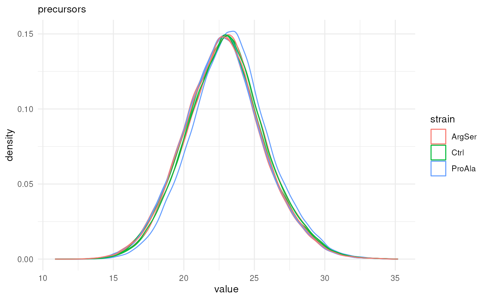
qf[, , "precursorsPTM_log"] |> #1.
longForm(colvars = colnames(colData(qf))) |> #2.
data.frame() |>
filter(!is.na(value)) |>
ggplot() + #3.
aes(x = value,
colour = strain,
group = colname) +
geom_density() +
labs(subtitle = "PTM - precursors") +
theme_minimal()## harmonizing input:
## removing 27 sampleMap rows not in names(experiments)
## removing 9 colData rownames not in sampleMap 'primary'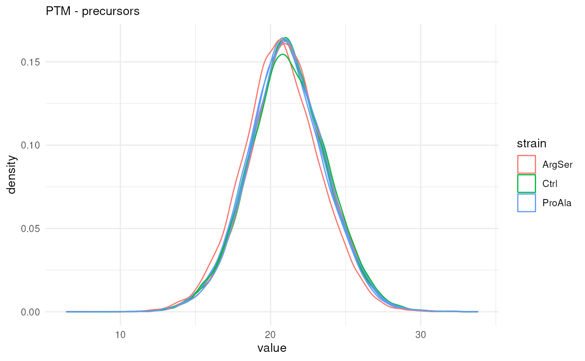
The data seems very clean. However, normalisation is still required.
We use the median of ratio normalisation, which addresses both differences in loading as well as difference in compositionality.
- This first calculates a reference sample by using the log2 geometric mean, i.e. the arithmetic mean on a log scale, for every feature.
- Subsequently log2 fold changes are calculated between each feature of a sample and the reference sample.
- Finally, the median of these log2 fold changes are used as the log2-tranformed normalisation factor.
The method is the default method for normalisation in bulk RNA-seq data analysis with DESeq2. In our hands it performs very well in a proteomics context.
qf <- sweep( #4. Subtract log2 norm factor column-by-column (MARGIN = 2)
qf,
MARGIN = 2,
STATS = nfLogMedianOfRatios(qf,"precursors_log"),
i = "precursors_log",
name = "precursors_norm"
)## This function aims to calculate norm factors on a log scale,
## the input data are assumed to be on the log-scale!
qf <- sweep( #4. Subtract log2 norm factor column-by-column (MARGIN = 2)
qf,
MARGIN = 2,
STATS = nfLogMedianOfRatios(qf,"precursorsPTM_log"),
i = "precursorsPTM_log",
name = "precursorsPTM_norm"
)## This function aims to calculate norm factors on a log scale,
## the input data are assumed to be on the log-scale!We explore the effect of the global normalisation in the subsequent plot.
Formally, the function applies the following operation on each sample across all precursors :
with the log2-transformed intensities and the log2-transformed norm factor.
Upon normalisation, we can see that the distribution of the nicely overlap (using the same code as above)
qf[, , "precursors_norm"] |>
longForm(colvars = colnames(colData(qf))) |>
data.frame() |>
filter(!is.na(value)) |>
ggplot() +
aes(x = value,
colour = strain,
group = colname) +
geom_density() +
labs(subtitle = "Median normalisation precursors") +
theme_minimal()## harmonizing input:
## removing 45 sampleMap rows not in names(experiments)
## removing 9 colData rownames not in sampleMap 'primary'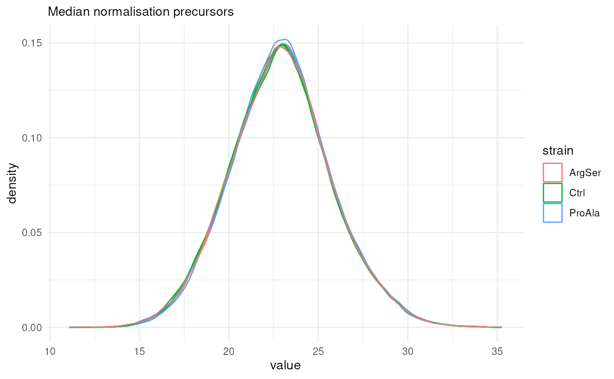
qf[, , "precursorsPTM_norm"] |>
longForm(colvars = colnames(colData(qf))) |>
data.frame() |>
filter(!is.na(value)) |>
ggplot() +
aes(x = value,
colour = strain,
group = colname) +
geom_density() +
labs(subtitle = "Median normalisation PTM precursors") +
theme_minimal()## harmonizing input:
## removing 45 sampleMap rows not in names(experiments)
## removing 9 colData rownames not in sampleMap 'primary'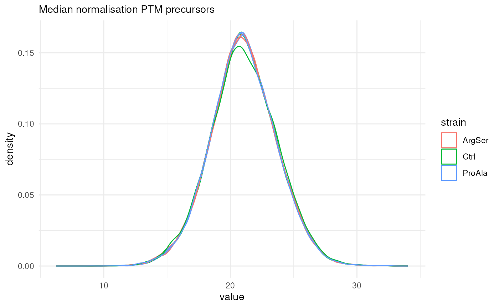
We also explore the normalisation for the common precursors.
precursorsCommon <- assay(qf[, , "precursors_log"]) |> na.exclude() |> rownames()## harmonizing input:
## removing 45 sampleMap rows not in names(experiments)
## removing 9 colData rownames not in sampleMap 'primary'
qf[precursorsCommon, , "precursors_norm"] |>
longForm(colvars = colnames(colData(qf))) |>
data.frame() |>
filter(!is.na(value)) |>
ggplot() +
aes(x = value,
colour = strain,
group = colname) +
geom_density() +
theme_minimal() +
labs(subtitle = "Median normalised log2 precursor intensities (common)")## Warning: 'experiments' dropped; see 'drops()'## harmonizing input:
## removing 45 sampleMap rows not in names(experiments)
## removing 9 colData rownames not in sampleMap 'primary'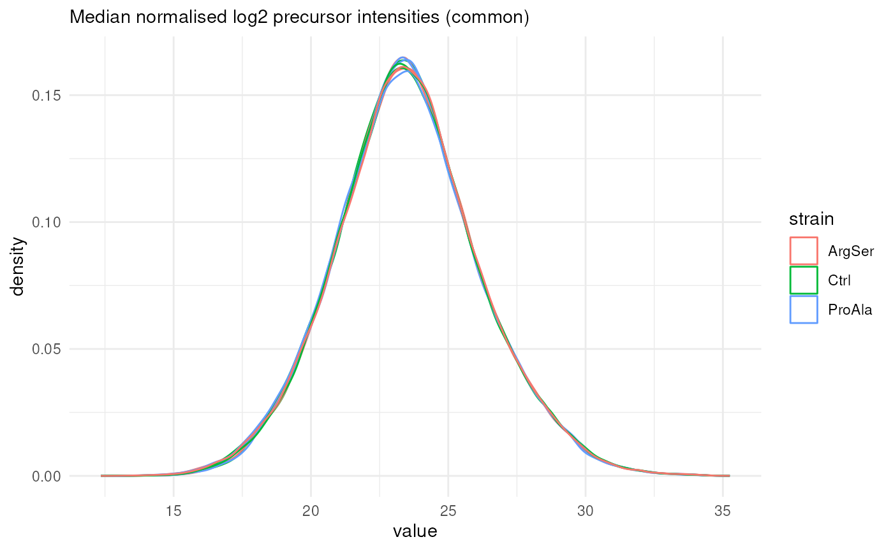
precursorsCommonPTM <- assay(qf[, , "precursorsPTM_log"]) |> na.exclude() |> rownames()## harmonizing input:
## removing 45 sampleMap rows not in names(experiments)
## removing 9 colData rownames not in sampleMap 'primary'
qf[precursorsCommonPTM, , "precursorsPTM_norm"] |>
longForm(colvars = colnames(colData(qf))) |>
data.frame() |>
filter(!is.na(value)) |>
ggplot() +
aes(x = value,
colour = strain,
group = colname) +
geom_density() +
theme_minimal() +
labs(subtitle = "Median normalised log2 precursor intensities (common)")## Warning: 'experiments' dropped; see 'drops()'## harmonizing input:
## removing 45 sampleMap rows not in names(experiments)
## removing 9 colData rownames not in sampleMap 'primary'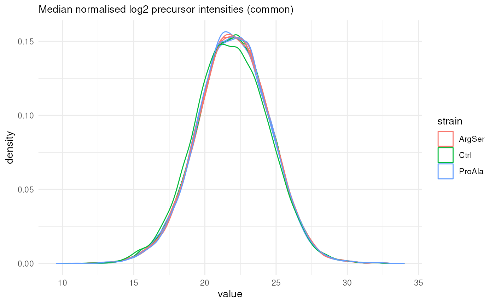
Remove temporarily objects
rm(precursorsCommon, precursorsCommonPTM)## used (Mb) gc trigger (Mb) max used (Mb)
## Ncells 10543032 563.1 16859180 900.4 16859180 900.4
## Vcells 27159569 207.3 134467976 1026.0 262535340 2003.0## used (Mb) gc trigger (Mb) max used (Mb)
## Ncells 10543030 563.1 16859180 900.4 16859180 900.4
## Vcells 27159602 207.3 107574381 820.8 262535340 2003.0Note, that normalisation could have been avoided by using Precursor.Normalised which is already internally normalised by DIA-NN. However, we do not know the exact procedure for this.
This generally works well for many datasets.
In this vignette we have chosen to conduct the normalisation explicitly ourselves using a method for which we know the underlying rationale.
Summarisation
Here, we summarise the precursor-level data for the non-enriched runs into protein intensities using maxLFQ, which is one of the default methods used in DIA data analysis.
Note, that the maxLFQ implementation can become slow for large datasets. In that case we recommend the median polish method.
maxLFQ first calculates all pairwise log ratio’s between samples only using their shared precursors. Particularly, it uses the median of the log ratio’s between the shared precursors, i.e. .
Hence, it first eliminates ion effects.It then estimates the summaries by solving
It is implemented in the maxLFQ function of the
iq package.
aggregateFeatures() in the QFeatures package streamlines
summarisation. It requires the name of a rowData column to
group the precursors into proteins (or protein groups), here
Protein.Group. We provide the summarisation approach
through the fun argument.
The function will return a QFeatures object with a new
set that we called proteins.
Other summarisation methods are available from the
MsCoreUtils package, see ?aggregateFeatures
for a comprehensive list.
(qf <- aggregateFeatures(
qf, i = "precursors_norm",
name = "proteins",
fcol = "Protein.Group",
fun = function(X) iq::maxLFQ(X)$estimate
))## | | | 0% | |======================================================================| 100%## The following messages occurred during aggregation:##
## Your quantitative data contain missing values. Please read the relevant
## section(s) in the aggregateFeatures manual page regarding the effects
## of missing values on data aggregation.
##
## Occurred during the aggregation of set(s): precursors## An instance of class QFeatures (type: bulk) with 7 sets:
##
## [1] precursors: SummarizedExperiment with 78452 rows and 9 columns
## [2] precursorsPTM: SummarizedExperiment with 34209 rows and 9 columns
## [3] precursors_log: SummarizedExperiment with 78452 rows and 9 columns
## [4] precursorsPTM_log: SummarizedExperiment with 34209 rows and 9 columns
## [5] precursors_norm: SummarizedExperiment with 78452 rows and 9 columns
## [6] precursorsPTM_norm: SummarizedExperiment with 34209 rows and 9 columns
## [7] proteins: SummarizedExperiment with 4337 rows and 9 columns## used (Mb) gc trigger (Mb) max used (Mb)
## Ncells 10558705 563.9 16859180 900.4 16859180 900.4
## Vcells 27542962 210.2 86059505 656.6 262535340 2003.0## used (Mb) gc trigger (Mb) max used (Mb)
## Ncells 10558712 563.9 16859180 900.4 16859180 900.4
## Vcells 27543010 210.2 86059505 656.6 262535340 2003.0Data exploration and QC
Data exploration aims to highlight the main sources of variation in the data prior to data modelling and can pinpoint to outlying or off-behaving samples.
We first performa the QC for the Phospho-enriched runs then for the non-enriched runs.
Phospho-enriched runs
Marginal distribution at precursor level
qf[, , "precursorsPTM_norm"] |>
longForm(colvars = colnames(colData(qf))) |>
data.frame() |>
filter(!is.na(value)) |>
ggplot() +
aes(x = value,
colour = strain,
group = colname) +
geom_density() +
theme_minimal() +
labs(subtitle = "Normalised log2 PTM precursor intensities")## harmonizing input:
## removing 54 sampleMap rows not in names(experiments)
## removing 9 colData rownames not in sampleMap 'primary'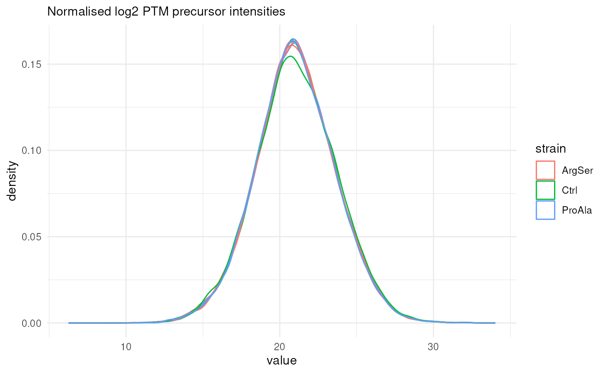
qf[, , "precursorsPTM_norm"] |>
longForm(colvars = colnames(colData(qf))) |>
data.frame() |>
filter(!is.na(value)) |>
ggplot() +
aes(x = sampleId,
y = value,
colour = strain,
group = colname) +
xlab("sample") +
geom_boxplot() +
theme_minimal() +
labs(subtitle = "Normalised log2 PTM precursor intensities")## harmonizing input:
## removing 54 sampleMap rows not in names(experiments)
## removing 9 colData rownames not in sampleMap 'primary'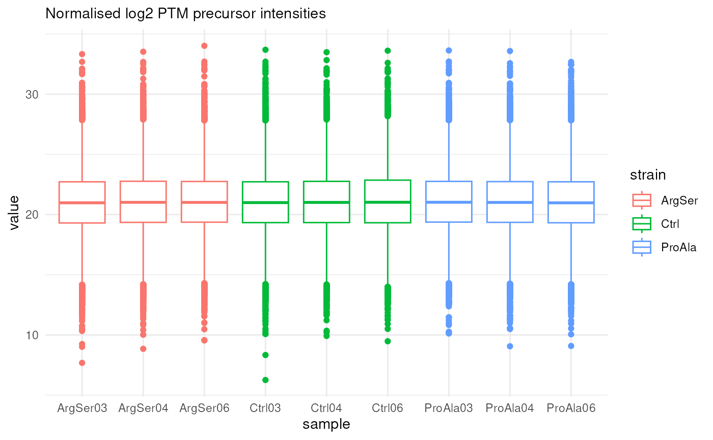
## used (Mb) gc trigger (Mb) max used (Mb)
## Ncells 10588280 565.5 16859180 900.4 16859180 900.4
## Vcells 29276723 223.4 86059505 656.6 262535340 2003.0## used (Mb) gc trigger (Mb) max used (Mb)
## Ncells 10588287 565.5 16859180 900.4 16859180 900.4
## Vcells 29276771 223.4 86059505 656.6 262535340 2003.0Charge state
qf[, , "precursorsPTM_norm"] |>
longForm(colvars = colnames(colData(qf)), rowvars = "Precursor.Charge") |>
as.data.frame() |>
filter(!is.na(value)) |>
filter(Precursor.Charge<=4) |>
ggplot(aes(x = sampleId)) +
geom_bar(aes(fill = factor(Precursor.Charge, levels = 4:1)),
colour = "black") +
labs(title = "Number of phospho-ions per sample",
x = "Sample",
fill = "Charge state") +
theme_bw() +
theme(axis.text.x = element_text(angle = 90))## harmonizing input:
## removing 54 sampleMap rows not in names(experiments)
## removing 9 colData rownames not in sampleMap 'primary'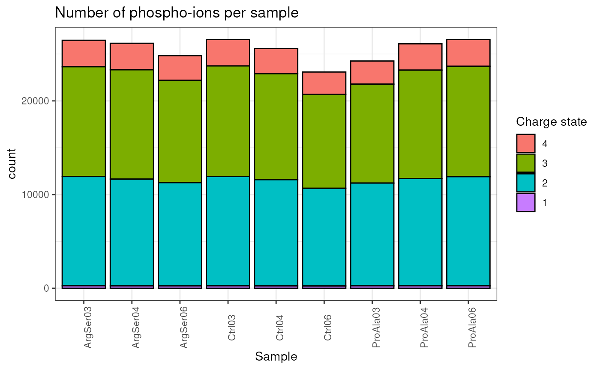
## used (Mb) gc trigger (Mb) max used (Mb)
## Ncells 10595788 565.9 16859180 900.4 16859180 900.4
## Vcells 29382810 224.2 86059505 656.6 262535340 2003.0## used (Mb) gc trigger (Mb) max used (Mb)
## Ncells 10595795 565.9 16859180 900.4 16859180 900.4
## Vcells 29382858 224.2 86059505 656.6 262535340 2003.0Identifications per sample
qf[,,"precursorsPTM_norm"] |>
longForm(colvars = colnames(colData(qf)),
rowvars= c("Precursor.Id",
"Protein.Group")) |>
data.frame() |>
filter(!is.na(value)) |>
group_by(strain, sampleId) |>
summarise(Precursors = length(unique(Precursor.Id)),
`Protein Groups` = length(unique(Protein.Group))) |>
pivot_longer(-(1:2),
names_to = "Feature",
values_to = "IDs") |>
ggplot(aes(x = sampleId, y = IDs, fill = strain)) +
geom_col() +
#scale_fill_observable() +
facet_wrap(~Feature,
scales = "free_y") +
labs(title = "Precursor and protein group identificiations per PTM sample",
x = "Sample",
y = "Identifications") +
theme_bw() +
theme(axis.text.x = element_text(angle = 90))## harmonizing input:
## removing 54 sampleMap rows not in names(experiments)
## removing 9 colData rownames not in sampleMap 'primary'## `summarise()` has regrouped the output.
## ℹ Summaries were computed grouped by strain and sampleId.
## ℹ Output is grouped by strain.
## ℹ Use `summarise(.groups = "drop_last")` to silence this message.
## ℹ Use `summarise(.by = c(strain, sampleId))` for per-operation grouping
## (`?dplyr::dplyr_by`) instead.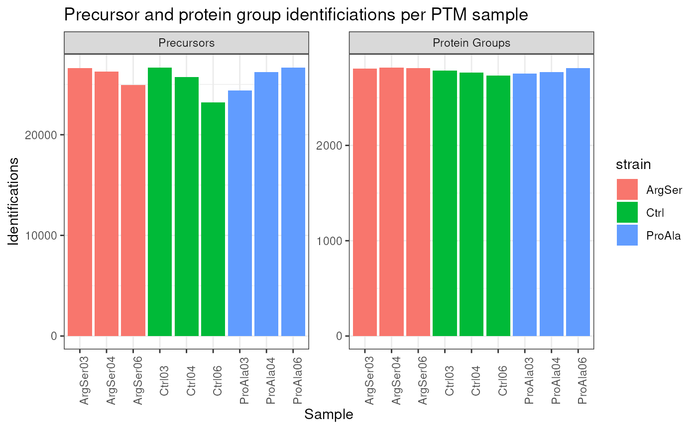
# Data Modeling (Robust Regression){#sec-modelling}## used (Mb) gc trigger (Mb) max used (Mb)
## Ncells 10645627 568.6 16859180 900.4 16859180 900.4
## Vcells 26148823 199.5 86059505 656.6 262535340 2003.0## used (Mb) gc trigger (Mb) max used (Mb)
## Ncells 10645607 568.6 16859180 900.4 16859180 900.4
## Vcells 26148826 199.5 86059505 656.6 262535340 2003.0Dimensionality reduction plot
A common approach for data exploration is to perform dimension reduction, such as Multi Dimensional Scaling (MDS). We will first extract the set to explore along the sample annotations (used for plot colouring).
getWithColData(qf, "precursorsPTM_norm") |>
as("SingleCellExperiment") |>
runMDS(exprs_values = 1) |>
plotMDS(colour_by = "strain") 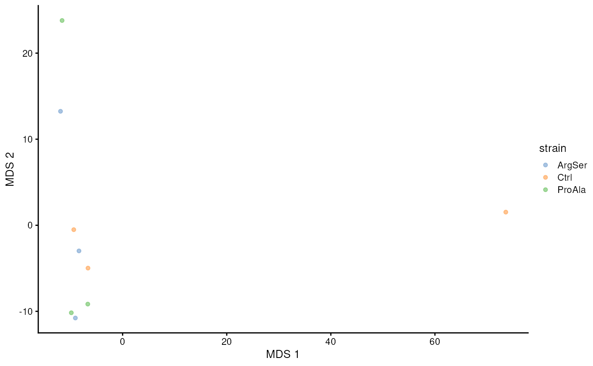
## used (Mb) gc trigger (Mb) max used (Mb)
## Ncells 10667744 569.8 16859180 900.4 16859180 900.4
## Vcells 26214495 200.1 86059505 656.6 262535340 2003.0## used (Mb) gc trigger (Mb) max used (Mb)
## Ncells 10667733 569.8 16859180 900.4 16859180 900.4
## Vcells 26214513 200.1 86059505 656.6 262535340 2003.0Non-enriched runs
Marginal distribution at precursor and protein level
qf[, , "precursors_norm"] |>
longForm(colvars = colnames(colData(qf))) |>
data.frame() |>
filter(!is.na(value)) |>
ggplot() +
aes(x = value,
colour = strain,
group = colname) +
geom_density() +
theme_minimal() +
labs(subtitle = "Normalised log2 precursor intensities")## harmonizing input:
## removing 54 sampleMap rows not in names(experiments)
## removing 9 colData rownames not in sampleMap 'primary'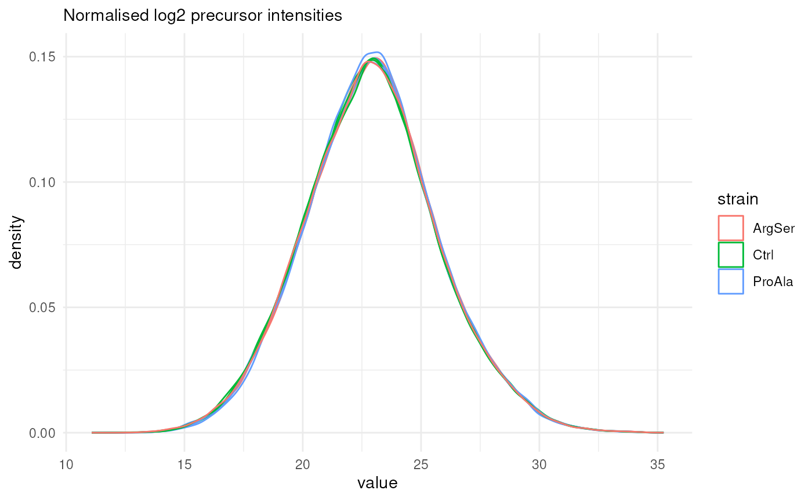
qf[, , "precursors_norm"] |>
longForm(colvars = colnames(colData(qf))) |>
data.frame() |>
filter(!is.na(value)) |>
ggplot() +
aes(x = sampleId,
y = value,
colour = strain,
group = colname) +
xlab("sample") +
geom_boxplot() +
theme_minimal() +
labs(subtitle = "Normalised log2 precursor intensities")## harmonizing input:
## removing 54 sampleMap rows not in names(experiments)
## removing 9 colData rownames not in sampleMap 'primary'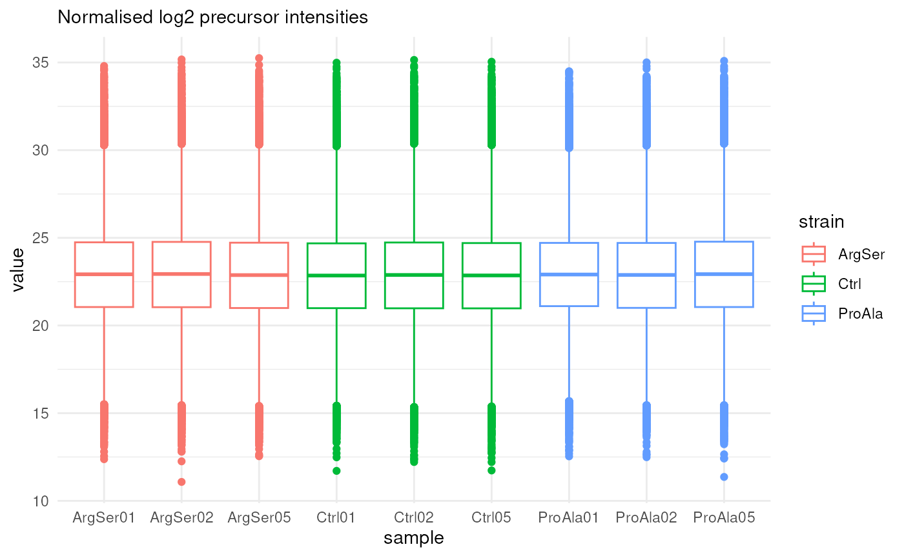
qf[, , "proteins"] |>
longForm(colvars = colnames(colData(qf))) |>
data.frame() |>
filter(!is.na(value)) |>
ggplot() +
aes(x = value,
colour = strain,
group = colname) +
geom_density() +
theme_minimal() +
labs(subtitle = "log2 protein intensities (normalised precursors)")## harmonizing input:
## removing 54 sampleMap rows not in names(experiments)
## removing 9 colData rownames not in sampleMap 'primary'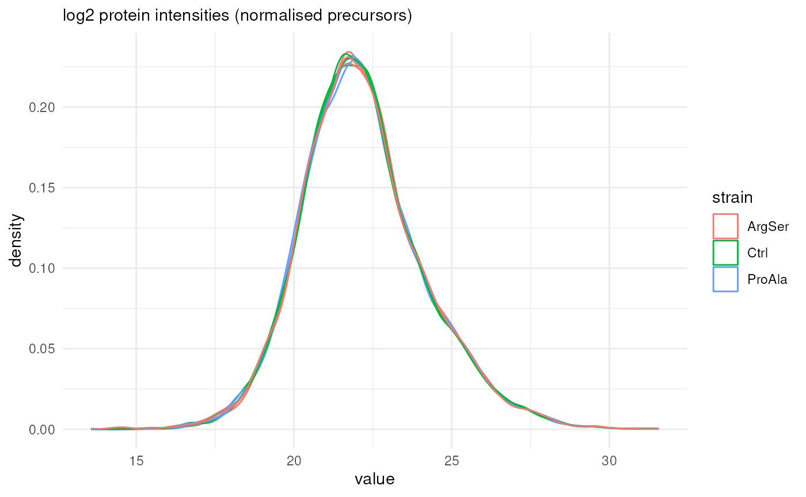
qf[, , "proteins"] |>
longForm(colvars = colnames(colData(qf))) |>
data.frame() |>
filter(!is.na(value)) |>
ggplot() +
aes(x = sampleId,
y = value,
colour = strain,
group = colname) +
xlab("sample") +
geom_boxplot() +
theme_minimal() +
labs(subtitle = "log2 protein intensities (normalised precursors)")## harmonizing input:
## removing 54 sampleMap rows not in names(experiments)
## removing 9 colData rownames not in sampleMap 'primary'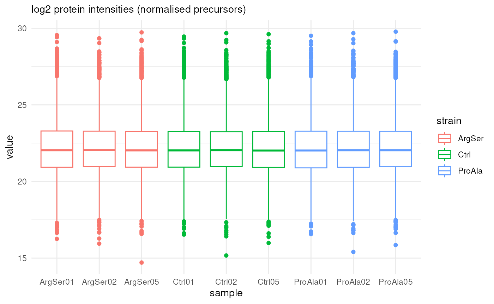
## used (Mb) gc trigger (Mb) max used (Mb)
## Ncells 10668221 569.8 16859180 900.4 16859180 900.4
## Vcells 26742655 204.1 86059505 656.6 262535340 2003.0## used (Mb) gc trigger (Mb) max used (Mb)
## Ncells 10668225 569.8 16859180 900.4 16859180 900.4
## Vcells 26742698 204.1 86059505 656.6 262535340 2003.0Charge state
qf[, , "precursors_norm"] |>
longForm(colvars = colnames(colData(qf)), rowvars = "Precursor.Charge") |>
as.data.frame() |>
filter(!is.na(value)) |>
filter(Precursor.Charge<=4) |>
ggplot(aes(x = sampleId)) +
geom_bar(aes(fill = factor(Precursor.Charge, levels = 4:1)),
colour = "black") +
labs(title = "Number of precursor ions per sample",
x = "Sample",
fill = "Charge state") +
theme_bw() +
theme(axis.text.x = element_text(angle = 90))## harmonizing input:
## removing 54 sampleMap rows not in names(experiments)
## removing 9 colData rownames not in sampleMap 'primary'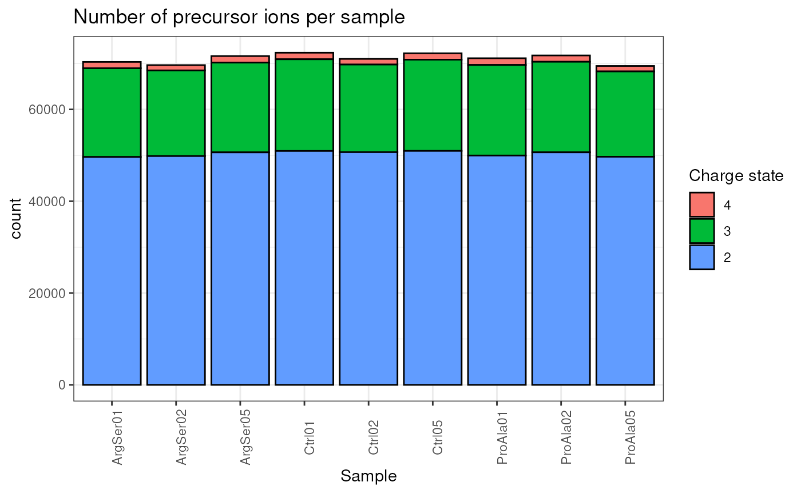
## used (Mb) gc trigger (Mb) max used (Mb)
## Ncells 10668220 569.8 16859180 900.4 16859180 900.4
## Vcells 35472656 270.7 86059505 656.6 262535340 2003.0## used (Mb) gc trigger (Mb) max used (Mb)
## Ncells 10668227 569.8 16859180 900.4 16859180 900.4
## Vcells 35472704 270.7 86059505 656.6 262535340 2003.0Identifications per sample
qf[,,"precursors_norm"] |>
longForm(colvars = colnames(colData(qf)),
rowvars= c("Precursor.Id",
"Protein.Group")) |>
data.frame() |>
filter(!is.na(value)) |>
group_by(strain, sampleId) |>
summarise(Precursors = length(unique(Precursor.Id)),
`Protein Groups` = length(unique(Protein.Group))) |>
pivot_longer(-(1:2),
names_to = "Feature",
values_to = "IDs") |>
ggplot(aes(x = sampleId, y = IDs, fill = strain)) +
geom_col() +
#scale_fill_observable() +
facet_wrap(~Feature,
scales = "free_y") +
labs(title = "Precursor and protein group identificiations per sample",
x = "Sample",
y = "Identifications") +
theme_bw() +
theme(axis.text.x = element_text(angle = 90))## harmonizing input:
## removing 54 sampleMap rows not in names(experiments)
## removing 9 colData rownames not in sampleMap 'primary'## `summarise()` has regrouped the output.
## ℹ Summaries were computed grouped by strain and sampleId.
## ℹ Output is grouped by strain.
## ℹ Use `summarise(.groups = "drop_last")` to silence this message.
## ℹ Use `summarise(.by = c(strain, sampleId))` for per-operation grouping
## (`?dplyr::dplyr_by`) instead.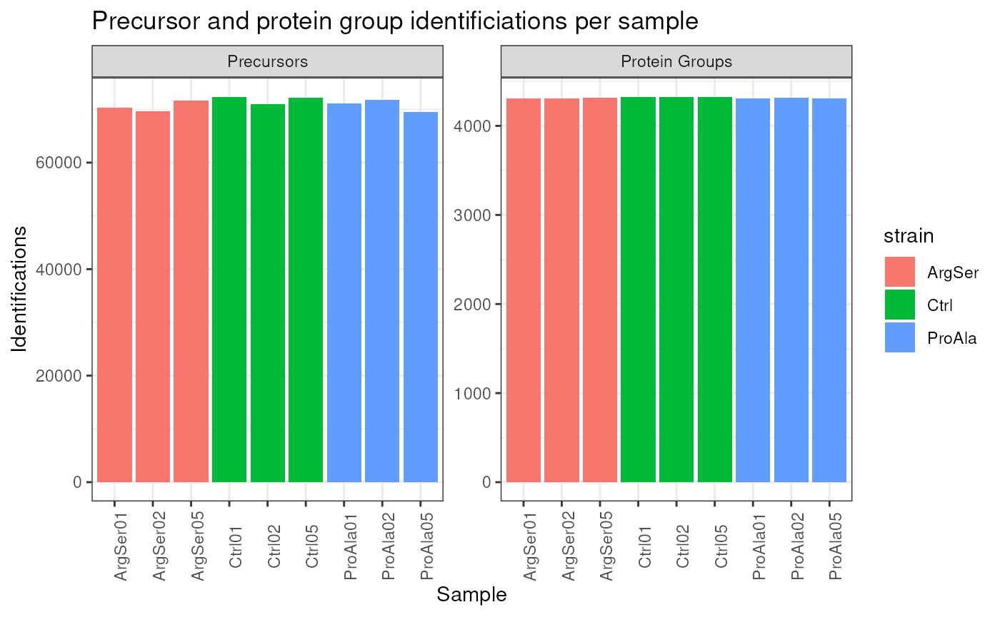
## used (Mb) gc trigger (Mb) max used (Mb)
## Ncells 10668356 569.8 16859180 900.4 16859180 900.4
## Vcells 26199827 199.9 86059505 656.6 262535340 2003.0## used (Mb) gc trigger (Mb) max used (Mb)
## Ncells 10668339 569.8 16859180 900.4 16859180 900.4
## Vcells 26199835 199.9 86059505 656.6 262535340 2003.0Dimensionality reduction plot
getWithColData(qf, "proteins") |>
as("SingleCellExperiment") |>
runMDS(exprs_values = 1) |>
plotMDS(colour_by = "strain") 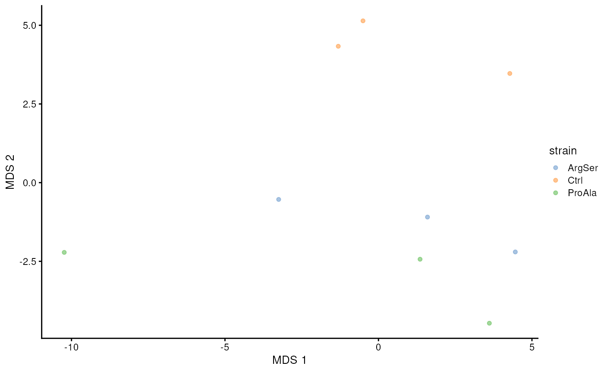
## used (Mb) gc trigger (Mb) max used (Mb)
## Ncells 10667919 569.8 16859180 900.4 16859180 900.4
## Vcells 26200866 199.9 86059505 656.6 262535340 2003.0## used (Mb) gc trigger (Mb) max used (Mb)
## Ncells 10667908 569.8 16859180 900.4 16859180 900.4
## Vcells 26200884 199.9 86059505 656.6 262535340 2003.0Data Modeling at phospho-precursor-level
Model estimation
We first define the model. We only have one source of variability in the experiment that we can model, i.e. the effect of the strain.
We fit the model to each phosphorylated precursor in the
precursorsPTM_normsummarised experiment of the QFeatures objectqfusing the msqrob function.
model <- ~ strain
qf <- msqrob(
qf,
i = "precursorsPTM_norm",
formula = model,
robust = TRUE)We enabled M-estimation (robust = TRUE) for improved
robustness against outliers.
## used (Mb) gc trigger (Mb) max used (Mb)
## Ncells 11300061 603.5 16859180 900.4 16859180 900.4
## Vcells 27805458 212.2 86059505 656.6 262535340 2003.0## used (Mb) gc trigger (Mb) max used (Mb)
## Ncells 11300068 603.5 16859180 900.4 16859180 900.4
## Vcells 27805506 212.2 86059505 656.6 262535340 2003.0Inference
We can now convert the research question “Is the abundance of phospho-precursors different between the strains” into a statistical hypotheses.
In other words, we need to translate this question in a null and alternative hypothesis on a single model parameter or a linear combination of model parameters, which is also referred to with a contrast.
To aid defining contrasts, we will visualise the experimental design
using the ExploreModelMatrix package.
vd <- ExploreModelMatrix::VisualizeDesign(
sampleData = colData(qf),
designFormula = model,
textSizeFitted = 4
)
vd$plotlist## [[1]] We have 3 interesting research questions related to the strain.
We have 3 interesting research questions related to the strain.
- Is a precursor DA between ArgSer strain and the WT (control)
- Is a precursor DA between ProAla strain and the WT (control)
- Is a precursor DA between ProAla strain and the ArgSer strain.
Each of these contrasts can be translated in a log2 FC or a difference in log2 FC and can be estimated with one or a linear combination of the model parameters.
Below we define the contrast and construct the corresponding contrast matrix.
We can generate the null-hypothesess for all pairwise comparisons
manually. However, here we will use the
createPairwiseContrasts function in
msqrob2.
(allHypotheses <- createPairwiseContrasts(
model, colData(qf), "strain"
)
)## Warning: the 'nobars' function has moved to the reformulas package. Please update your imports, or ask an upstream package maintainer to do so.
## This warning is displayed once per session.## [1] "strainCtrl = 0" "strainProAla = 0"
## [3] "strainProAla - strainCtrl = 0"Based on these null hypothesis we now generate the contrast matrix
with all three contrasts using the makeContrast function.
Note, that experienced users can also define the contrast matrix,
directly.
(L <- makeContrast(
allHypotheses,
parameterNames = colnames(vd$designmatrix)
))## strainCtrl strainProAla strainProAla - strainCtrl
## (Intercept) 0 0 0
## strainCtrl 1 0 -1
## strainProAla 0 1 1We assess the contrast for each precursor.
qf <- hypothesisTest(qf, i = "precursorsPTM_norm", contrast = L, overwrite = TRUE)We extract the results table from the precursorsPTM_norm
summarised experiment in the qf object.
inferencesPTM <-
msqrobCollect(qf[["precursorsPTM_norm"]], L)## used (Mb) gc trigger (Mb) max used (Mb)
## Ncells 11460497 612.1 16859180 900.4 16859180 900.4
## Vcells 30463599 232.5 86059505 656.6 262535340 2003.0## used (Mb) gc trigger (Mb) max used (Mb)
## Ncells 11460504 612.1 16859180 900.4 16859180 900.4
## Vcells 30463647 232.5 86059505 656.6 262535340 2003.0Report results
We report the results using a results table, volcano plots and heatmaps.
Results table
We use the 5% nominal FDR level to report results
alpha <- 0.05
for (j in colnames(L)) {
inference <- inferencesPTM |>
dplyr::filter(adjPval < alpha & contrast == j)
cat("**Median - Contrast:**", j, "= 0 (", nrow(inference),
"significant precursors)\n\n")
cat('<div style="max-height:300px; overflow-y:auto;">')
print(
kable(
inference |>
dplyr::arrange(pval) |>
dplyr::relocate(feature),
row.names = FALSE
)
)
cat('</div>')
cat("\n\n\n---\n\n")
}Median - Contrast: strainCtrl = 0 ( 1 significant precursors)
| feature | logFC | se | df | t | pval | adjPval | contrast |
|---|---|---|---|---|---|---|---|
| IGDS(UniMod:21)LQGSPQR2 | -2.907071 | 0.1393496 | 6.823797 | -20.86171 | 2e-07 | 0.0045824 | strainCtrl |
Median - Contrast: strainProAla = 0 ( 4 significant precursors)
| feature | logFC | se | df | t | pval | adjPval | contrast |
|---|---|---|---|---|---|---|---|
| AVQES(UniMod:21)DS(UniMod:21)TTS(UniMod:21)RIIEEHESPIDAEK3 | -3.860267 | 0.1557383 | 5.826762 | -24.78688 | 4.0e-07 | 0.0092686 | strainProAla |
| S(UniMod:21)DSEVNQEAKPEVK3 | 1.921745 | 0.1343868 | 6.342927 | 14.30010 | 4.6e-06 | 0.0467721 | strainProAla |
| NTSYQES(UniMod:21)PGLQERPK3 | -1.113769 | 0.1049216 | 7.826762 | -10.61525 | 6.4e-06 | 0.0467721 | strainProAla |
| (UniMod:1)SDS(UniMod:21)EVNQEAKPEVK2 | 2.002423 | 0.1433679 | 6.038833 | 13.96702 | 8.0e-06 | 0.0467721 | strainProAla |
Median - Contrast: strainProAla - strainCtrl = 0 ( 19 significant precursors)
| feature | logFC | se | df | t | pval | adjPval | contrast |
|---|---|---|---|---|---|---|---|
| IGDS(UniMod:21)LQGSPQR2 | 3.0414472 | 0.1557899 | 6.823797 | 19.522750 | 3.00e-07 | 0.0054041 | strainProAla - strainCtrl |
| AVQES(UniMod:21)DS(UniMod:21)TTS(UniMod:21)RIIEEHESPIDAEK3 | -3.7465156 | 0.1557383 | 5.826762 | -24.056476 | 5.00e-07 | 0.0054041 | strainProAla - strainCtrl |
| GQVVSEEQRPGT(UniMod:21)PLFTVK3 | 2.2682125 | 0.1336666 | 6.779026 | 16.969186 | 8.00e-07 | 0.0064050 | strainProAla - strainCtrl |
| (UniMod:1)SDS(UniMod:21)EVNQEAKPEVK2 | 2.0997487 | 0.1203906 | 6.038833 | 17.441138 | 2.10e-06 | 0.0123465 | strainProAla - strainCtrl |
| (UniMod:1)SDEEHTFENADAGAS(UniMod:21)ATYPMQC(UniMod:4)SALR4 | -7.2887717 | 0.4604139 | 5.736513 | -15.830911 | 5.90e-06 | 0.0233619 | strainProAla - strainCtrl |
| VDIIANDQGNRT(UniMod:21)TPSFVAFTDTER3 | 1.4613762 | 0.1367441 | 7.826762 | 10.686943 | 6.10e-06 | 0.0233619 | strainProAla - strainCtrl |
| S(UniMod:21)DSEVNQEAKPEVK3 | 1.8128444 | 0.1489254 | 6.342927 | 12.172839 | 1.24e-05 | 0.0392179 | strainProAla - strainCtrl |
| LTNMPFGGNPTANQSGS(UniMod:21)GNSLFGTK3 | -2.4850090 | 0.2265396 | 6.646603 | -10.969426 | 1.68e-05 | 0.0392179 | strainProAla - strainCtrl |
| LIDENATENGLAGS(UniMod:21)PKDEDGIIM(UniMod:35)TNK3 | -3.5131571 | 0.2707854 | 5.765748 | -12.973952 | 1.74e-05 | 0.0392179 | strainProAla - strainCtrl |
| NTSYQES(UniMod:21)PGLQERPK3 | -0.9528266 | 0.1049216 | 7.826762 | -9.081320 | 2.00e-05 | 0.0392179 | strainProAla - strainCtrl |
| PHTPFIS(UniMod:21)KLNTHQDSSYLSPNT(UniMod:21)TST(UniMod:21)TTPSNNNSNSNQAK4 | 3.8675421 | 0.2460948 | 4.826762 | 15.715662 | 2.49e-05 | 0.0392179 | strainProAla - strainCtrl |
| RAT(UniMod:21)YAGFLLADPK3 | 2.5531200 | 0.2564607 | 6.826762 | 9.955209 | 2.60e-05 | 0.0392179 | strainProAla - strainCtrl |
| RGQVVSEEQRPGT(UniMod:21)PLFTVK3 | 1.8197408 | 0.2057852 | 7.695480 | 8.842913 | 2.69e-05 | 0.0392179 | strainProAla - strainCtrl |
| TTPSFVAFT(UniMod:21)DTER2 | 1.2275840 | 0.1377368 | 7.598572 | 8.912537 | 2.75e-05 | 0.0392179 | strainProAla - strainCtrl |
| TT(UniMod:21)PSFVAFTDTER2 | 1.3146921 | 0.1515195 | 7.826293 | 8.676717 | 2.77e-05 | 0.0392179 | strainProAla - strainCtrl |
| S(UniMod:21)DSEVNQEAKPEVK2 | 2.0603552 | 0.2182683 | 7.086695 | 9.439554 | 2.89e-05 | 0.0392179 | strainProAla - strainCtrl |
| NIAPPPT(UniMod:21)T(UniMod:21)SVSAPS(UniMod:21)TPTLSSSSQMANMASPSTDNGDNEEK4 | -5.8974392 | 0.5097645 | 5.826762 | -11.568948 | 3.08e-05 | 0.0392179 | strainProAla - strainCtrl |
| RFS(UniMod:21)QHSS(UniMod:21)MLINNPATPNQK3 | 4.5073908 | 0.2202057 | 4.021668 | 20.469003 | 3.23e-05 | 0.0392179 | strainProAla - strainCtrl |
| ETVES(UniMod:21)ESSQTALSK2 | 0.9869042 | 0.1087065 | 7.253952 | 9.078612 | 3.24e-05 | 0.0392179 | strainProAla - strainCtrl |
Volcanoplots
plotVolcano(inferencesPTM) +
facet_wrap(~contrast) +
labs(title = "Precursor-level Phospho DA")
inferencesPTM |>
filter(adjPval < alpha) |>
mutate(DA = sign(logFC) |> as.factor() |> recode("-1"= "down","1" = "up")) |>
group_by(contrast, DA) |>
ggplot(aes(x = contrast)) +
geom_bar(aes(fill = factor(DA)),
colour = "black") +
theme_minimal() +
theme(axis.text.x = element_text(angle = 90))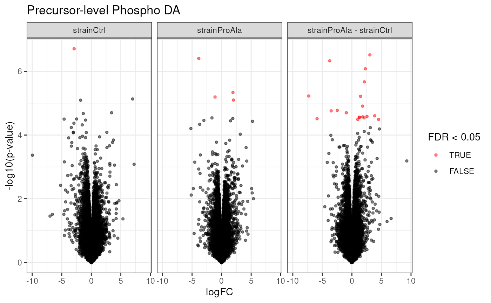
Heatmaps
We will make a heatmap for each contrast. Note that we cluster the rows ourselves to avoid issues with missing values.
lapply(colnames(L),
function(contrast, se, alpha)
{
sig <- rowData(se)[[contrast]] |>
filter(adjPval < alpha) |>
rownames()
if (length(sig) > 2)
{
quants <- t(scale(t(assay(se[sig,]))))
colnames(quants) <- se$sampleId #specific to this dataset to get short colnames
rowclushlp <- quants
rowclushlp[is.na(rowclushlp)] <- min(quants,na.rm=TRUE) - 2
rowclus <- hclust(dist(rowclushlp))
annotations <- columnAnnotation(
group = se$strain
) #3.
set.seed(1234) ## annotation colours are randomly generated by default
return(
Heatmap(show_row_names = FALSE,
quants,
name = "log2 intensity",
top_annotation = annotations,
column_title = paste0(contrast, " = 0"),
cluster_rows = rowclus
)
)
} else return(ggplot() + theme_minimal() + ggtitle(paste0(contrast, " = 0")))
},
se = getWithColData(qf, "precursorsPTM_norm"),
alpha = alpha)## [[1]]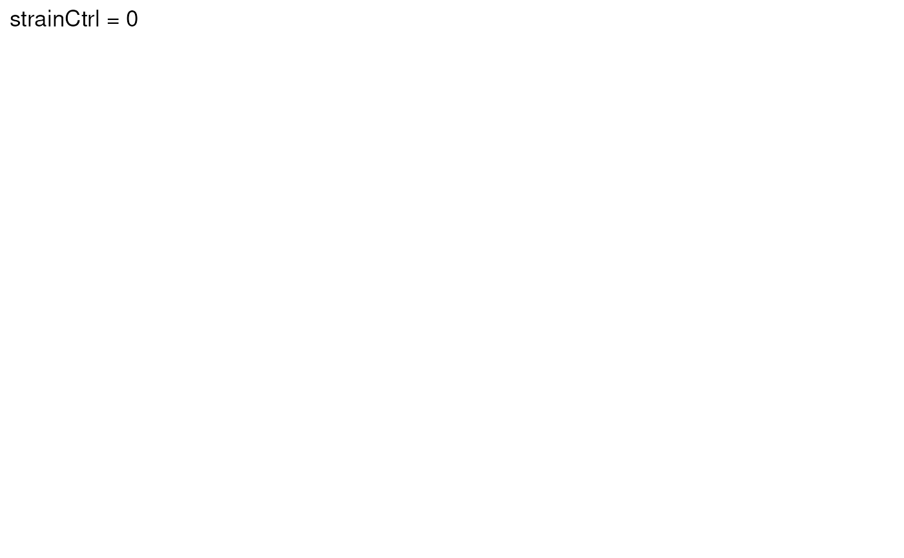
##
## [[2]]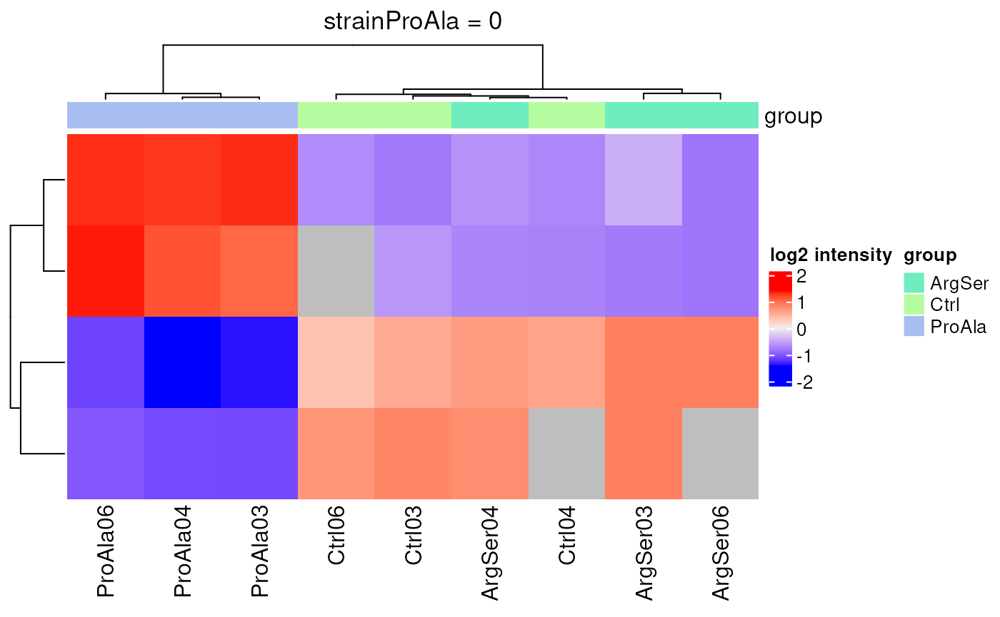
##
## [[3]]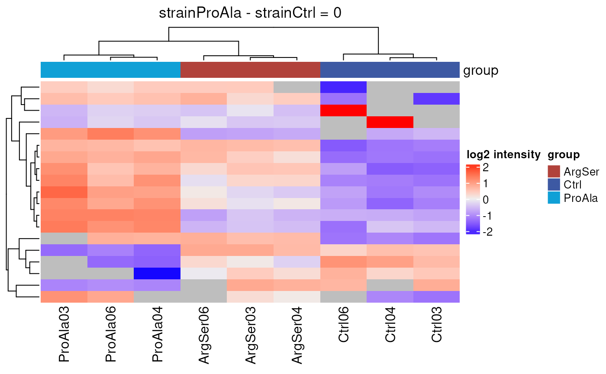
## used (Mb) gc trigger (Mb) max used (Mb)
## Ncells 11683258 624 16859180 900.4 16859180 900.4
## Vcells 30923066 236 86059505 656.6 262535340 2003.0## used (Mb) gc trigger (Mb) max used (Mb)
## Ncells 11683265 624 16859180 900.4 16859180 900.4
## Vcells 30923113 236 86059505 656.6 262535340 2003.0Detail plots
We can explore the data for a precursor to validate the statistical inference results. For example, let’s explore the precursor and the normalised precursor intensities for the precursor with the most significant log2 fold change.
## [1] "IGDS(UniMod:21)LQGSPQR2"
inferencesPTM |>
filter(feature == target_feature)## logFC se df
## strainCtrl.IGDS(UniMod:21)LQGSPQR2 -2.9070713 0.1393496 6.823796
## strainProAla.IGDS(UniMod:21)LQGSPQR2 0.1343759 0.1557591 6.823796
## strainProAla - strainCtrl.IGDS(UniMod:21)LQGSPQR2 3.0414472 0.1557899 6.823796
## t pval
## strainCtrl.IGDS(UniMod:21)LQGSPQR2 -20.861711 1.955531e-07
## strainProAla.IGDS(UniMod:21)LQGSPQR2 0.862716 4.175794e-01
## strainProAla - strainCtrl.IGDS(UniMod:21)LQGSPQR2 19.522750 3.054750e-07
## adjPval
## strainCtrl.IGDS(UniMod:21)LQGSPQR2 0.004582395
## strainProAla.IGDS(UniMod:21)LQGSPQR2 0.986318960
## strainProAla - strainCtrl.IGDS(UniMod:21)LQGSPQR2 0.005404076
## contrast
## strainCtrl.IGDS(UniMod:21)LQGSPQR2 strainCtrl
## strainProAla.IGDS(UniMod:21)LQGSPQR2 strainProAla
## strainProAla - strainCtrl.IGDS(UniMod:21)LQGSPQR2 strainProAla - strainCtrl
## feature
## strainCtrl.IGDS(UniMod:21)LQGSPQR2 IGDS(UniMod:21)LQGSPQR2
## strainProAla.IGDS(UniMod:21)LQGSPQR2 IGDS(UniMod:21)LQGSPQR2
## strainProAla - strainCtrl.IGDS(UniMod:21)LQGSPQR2 IGDS(UniMod:21)LQGSPQR2To obtain the required data, we perform a little data manipulation pipeline:
- We use the QFeatures subsetting functionality to retrieve all data related to ion data used for model fitting.
- We then convert the data with longForm() for plotting.
- Finally, we plot the log2 normalised intensities for each sample for the unnormalised and normalised phospho precursors.
qf[target_feature, , c("precursorsPTM_log","precursorsPTM_norm")] |> #1
longForm(colvars = colnames(colData(qf))) |> #2
data.frame() |>
ggplot() +
aes(x = sampleId,
y = value) +
geom_line(aes(group = rowname), linewidth = 0.1) +
geom_point(aes(colour = strain)) +
facet_wrap(~ assay, scales = "free") +
ggtitle(target_feature) +
theme_minimal() +
theme(axis.text.x = element_blank())## Warning: 'experiments' dropped; see 'drops()'## harmonizing input:
## removing 45 sampleMap rows not in names(experiments)
## removing 9 colData rownames not in sampleMap 'primary'## Warning: Removed 2 rows containing missing values or values outside the scale range
## (`geom_point()`).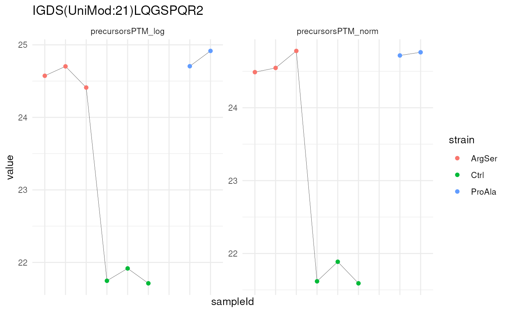
qf[target_feature, , c("precursorsPTM_log","precursorsPTM_norm")] |> #1
longForm(colvars = colnames(colData(qf))) |> #2
data.frame() |>
filter(!is.na(value)) %>%
{
ggplot(.) +
aes(x = strain,
y = value) +
geom_boxplot(aes(colour = strain)) +
facet_wrap(~ assay, scales = "free") +
geom_jitter(aes(shape = rowname)) +
scale_shape_manual(values = seq_len(dplyr::n_distinct(.$rowname))) +
ggtitle(target_feature) +
theme_minimal() +
theme(axis.text.x = element_blank()) +
guides(shape = "none")
}## Warning: 'experiments' dropped; see 'drops()'## harmonizing input:
## removing 45 sampleMap rows not in names(experiments)
## removing 9 colData rownames not in sampleMap 'primary'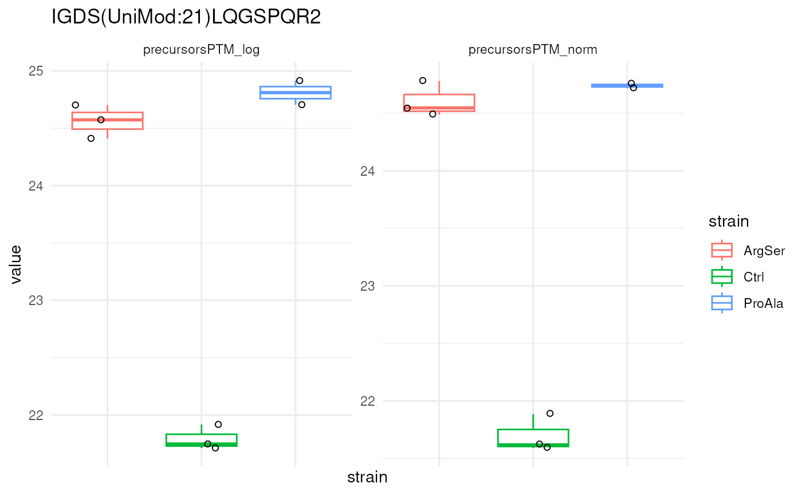
We prioritised DA phospho-precursors. However, they might be DA due to the parent proteins on which the PTMs occur that can also change in abundance regardless of the modification. Any changes in the abundance of a phospho-peptidoform can thus be confounded with changes in protein abundance.
We therefore assess differential abundance at the protein level for the non-enriched samples.
## used (Mb) gc trigger (Mb) max used (Mb)
## Ncells 11689554 624.3 16859180 900.4 16859180 900.4
## Vcells 30933959 236.1 86059505 656.6 262535340 2003.0## used (Mb) gc trigger (Mb) max used (Mb)
## Ncells 11689558 624.3 16859180 900.4 16859180 900.4
## Vcells 30934002 236.1 86059505 656.6 262535340 2003.0Data Modeling at protein-level (non-enriched samples)
Model estimation
We can use the same model to model the protein-level data of the non-enriched runs. Indeed, they stem from the same biological samples.
qf <- msqrob(
qf,
i = "proteins",
formula = model,
robust = TRUE)We enabled M-estimation (robust = TRUE) for improved
robustness against outliers.
## used (Mb) gc trigger (Mb) max used (Mb)
## Ncells 11781339 629.2 20894551 1115.9 16859180 900.4
## Vcells 31200138 238.1 86059505 656.6 262535340 2003.0## used (Mb) gc trigger (Mb) max used (Mb)
## Ncells 11781346 629.2 20894551 1115.9 16859180 900.4
## Vcells 31200186 238.1 86059505 656.6 262535340 2003.0Inference
We assess the contrast for each protein.
qf <- hypothesisTest(qf, i = "proteins", contrast = L, overwrite = TRUE)We extract the results table from the proteins
summarised experiment in the qf object.
inferences <-
msqrobCollect(qf[["proteins"]], L)## used (Mb) gc trigger (Mb) max used (Mb)
## Ncells 11794629 630.0 20894551 1115.9 20894551 1115.9
## Vcells 31470946 240.2 86059505 656.6 262535340 2003.0## used (Mb) gc trigger (Mb) max used (Mb)
## Ncells 11794633 630.0 20894551 1115.9 20894551 1115.9
## Vcells 31470989 240.2 86059505 656.6 262535340 2003.0Report results
We report the results using a results table, volcano plots and heatmaps.
Results table
for (j in colnames(L)) {
inference <- inferences |>
dplyr::filter(adjPval < alpha & contrast == j)
cat("**Median - Contrast:**", j, "= 0 (", nrow(inference),
"significant proteins)\n\n")
cat('<div style="max-height:300px; overflow-y:auto;">')
print(
kable(
inference |>
dplyr::arrange(pval) |>
dplyr::relocate(feature),
row.names = FALSE
)
)
cat('</div>')
cat("\n\n\n---\n\n")
}Median - Contrast: strainCtrl = 0 ( 100 significant proteins)
| feature | logFC | se | df | t | pval | adjPval | contrast |
|---|---|---|---|---|---|---|---|
| Q12068 | -1.2860137 | 0.0620324 | 8.025332 | -20.731318 | 0.0000000 | 0.0001277 | strainCtrl |
| P10591 | -0.6416403 | 0.0539470 | 7.992428 | -11.893895 | 0.0000023 | 0.0035417 | strainCtrl |
| P31539 | -0.4654138 | 0.0402663 | 7.876272 | -11.558385 | 0.0000032 | 0.0035417 | strainCtrl |
| P07264 | 0.4798853 | 0.0427519 | 7.899450 | 11.224886 | 0.0000039 | 0.0035417 | strainCtrl |
| P38260 | -0.4672883 | 0.0426249 | 7.986605 | -10.962800 | 0.0000043 | 0.0035417 | strainCtrl |
| P53912 | -0.7353055 | 0.0709042 | 8.299970 | -10.370408 | 0.0000049 | 0.0035417 | strainCtrl |
| P32644 | -0.4697007 | 0.0457143 | 8.111641 | -10.274702 | 0.0000063 | 0.0038674 | strainCtrl |
| P40008 | -0.3711670 | 0.0383005 | 8.299970 | -9.690921 | 0.0000083 | 0.0044843 | strainCtrl |
| P38113 | 0.4948643 | 0.0527058 | 8.299970 | 9.389187 | 0.0000106 | 0.0048785 | strainCtrl |
| P40989 | -0.7669038 | 0.0750043 | 7.510610 | -10.224794 | 0.0000113 | 0.0048785 | strainCtrl |
| P08432 | 0.6955783 | 0.0671047 | 7.262662 | 10.365567 | 0.0000130 | 0.0048785 | strainCtrl |
| P03965 | 0.3706027 | 0.0400749 | 8.055471 | 9.247750 | 0.0000145 | 0.0048785 | strainCtrl |
| Q08422 | -0.4929807 | 0.0497127 | 7.463183 | -9.916589 | 0.0000147 | 0.0048785 | strainCtrl |
| P34227 | -0.4795936 | 0.0539613 | 8.299970 | -8.887729 | 0.0000161 | 0.0049266 | strainCtrl |
| P23337 | 0.7682184 | 0.0860932 | 8.182473 | 8.923098 | 0.0000171 | 0.0049266 | strainCtrl |
| P32643 | 0.4476941 | 0.0490726 | 7.455963 | 9.123104 | 0.0000263 | 0.0068572 | strainCtrl |
| Q12449 | -0.4237912 | 0.0509159 | 8.268546 | -8.323350 | 0.0000270 | 0.0068572 | strainCtrl |
| P38737 | -0.3839040 | 0.0458048 | 7.978969 | -8.381308 | 0.0000317 | 0.0076113 | strainCtrl |
| P00635 | -1.3554765 | 0.1379833 | 6.603574 | -9.823481 | 0.0000352 | 0.0076198 | strainCtrl |
| P40897 | 0.6876077 | 0.0834128 | 7.997456 | 8.243429 | 0.0000352 | 0.0076198 | strainCtrl |
| Q01217 | 0.3474393 | 0.0437992 | 8.299970 | 7.932554 | 0.0000377 | 0.0077687 | strainCtrl |
| Q03148 | 0.4704411 | 0.0550758 | 7.381257 | 8.541708 | 0.0000440 | 0.0086422 | strainCtrl |
| P33416 | -0.3733440 | 0.0476179 | 7.996236 | -7.840419 | 0.0000506 | 0.0094146 | strainCtrl |
| Q04792 | 0.5511013 | 0.0713572 | 8.099827 | 7.723141 | 0.0000526 | 0.0094146 | strainCtrl |
| Q03102 | -0.6966588 | 0.0851494 | 7.483229 | -8.181607 | 0.0000544 | 0.0094146 | strainCtrl |
| O14467 | -0.4669558 | 0.0622481 | 8.287245 | -7.501532 | 0.0000574 | 0.0095543 | strainCtrl |
| P36007 | 0.3779477 | 0.0510498 | 8.215885 | 7.403510 | 0.0000662 | 0.0099245 | strainCtrl |
| P15705 | -0.3276313 | 0.0439390 | 8.113029 | -7.456507 | 0.0000671 | 0.0099245 | strainCtrl |
| P53691 | -0.3860819 | 0.0509175 | 7.911187 | -7.582496 | 0.0000680 | 0.0099245 | strainCtrl |
| P21801 | 0.3510215 | 0.0480214 | 8.269888 | 7.309688 | 0.0000701 | 0.0099245 | strainCtrl |
| Q06625 | 0.5482340 | 0.0746810 | 8.197945 | 7.341012 | 0.0000711 | 0.0099245 | strainCtrl |
| P10592 | -0.4144965 | 0.0561081 | 8.059284 | -7.387460 | 0.0000742 | 0.0100336 | strainCtrl |
| P53241 | 0.7776867 | 0.1080441 | 8.178332 | 7.197861 | 0.0000830 | 0.0107735 | strainCtrl |
| P00410 | 0.4332037 | 0.0601201 | 8.106559 | 7.205640 | 0.0000861 | 0.0107735 | strainCtrl |
| Q04432 | -0.4220600 | 0.0588292 | 8.135714 | -7.174326 | 0.0000872 | 0.0107735 | strainCtrl |
| P32775 | 0.4540000 | 0.0628385 | 7.873457 | 7.224872 | 0.0000977 | 0.0117397 | strainCtrl |
| P16474 | -0.3108708 | 0.0433128 | 7.900056 | -7.177351 | 0.0001006 | 0.0117597 | strainCtrl |
| P11972 | 0.5264468 | 0.0753521 | 8.144764 | 6.986492 | 0.0001047 | 0.0119184 | strainCtrl |
| P38162 | -0.4264521 | 0.0581316 | 7.488519 | -7.335976 | 0.0001131 | 0.0124390 | strainCtrl |
| P06738 | 0.6189721 | 0.0876903 | 7.870190 | 7.058616 | 0.0001150 | 0.0124390 | strainCtrl |
| P03962 | 0.4553702 | 0.0667233 | 8.211902 | 6.824752 | 0.0001189 | 0.0125431 | strainCtrl |
| P39692 | 0.3953873 | 0.0582048 | 8.122030 | 6.793041 | 0.0001294 | 0.0128234 | strainCtrl |
| P47169 | 0.3828464 | 0.0565916 | 8.167617 | 6.765078 | 0.0001298 | 0.0128234 | strainCtrl |
| P53128 | 0.3239155 | 0.0473278 | 8.009006 | 6.844084 | 0.0001311 | 0.0128234 | strainCtrl |
| P53940 | -0.4279268 | 0.0631361 | 8.095668 | -6.777847 | 0.0001334 | 0.0128234 | strainCtrl |
| P24000 | 0.3794745 | 0.0560102 | 7.917311 | 6.775100 | 0.0001483 | 0.0139451 | strainCtrl |
| P47164 | 0.4254495 | 0.0604750 | 7.448274 | 7.035130 | 0.0001532 | 0.0140994 | strainCtrl |
| Q99296 | 0.5366463 | 0.0809381 | 7.977562 | 6.630327 | 0.0001662 | 0.0149220 | strainCtrl |
| P22134 | -0.4410377 | 0.0686040 | 8.299970 | -6.428746 | 0.0001729 | 0.0149220 | strainCtrl |
| P07702 | 0.2344751 | 0.0362617 | 8.217275 | 6.466192 | 0.0001734 | 0.0149220 | strainCtrl |
| D6VTK4 | 0.4165244 | 0.0628152 | 7.875662 | 6.630953 | 0.0001760 | 0.0149220 | strainCtrl |
| P32642 | -0.8208439 | 0.1272963 | 8.157891 | -6.448294 | 0.0001825 | 0.0151789 | strainCtrl |
| Q12746 | -0.3091559 | 0.0470036 | 7.742884 | -6.577287 | 0.0002005 | 0.0163577 | strainCtrl |
| P32334 | 0.6370360 | 0.0895578 | 6.851926 | 7.113124 | 0.0002116 | 0.0169512 | strainCtrl |
| P36141 | -0.3647647 | 0.0578199 | 8.059380 | -6.308635 | 0.0002236 | 0.0175798 | strainCtrl |
| P18544 | 0.3527575 | 0.0575997 | 8.299970 | 6.124295 | 0.0002427 | 0.0183035 | strainCtrl |
| P05694 | 0.2555929 | 0.0415778 | 8.244076 | 6.147342 | 0.0002431 | 0.0183035 | strainCtrl |
| P32496 | -0.2500003 | 0.0408869 | 8.299970 | -6.114429 | 0.0002455 | 0.0183035 | strainCtrl |
| Q03104 | 0.4811274 | 0.0751156 | 7.632136 | 6.405155 | 0.0002543 | 0.0186408 | strainCtrl |
| P38182 | -0.5918029 | 0.0978597 | 8.299970 | -6.047465 | 0.0002649 | 0.0190948 | strainCtrl |
| P24869 | 0.5926775 | 0.0966802 | 8.057465 | 6.130286 | 0.0002720 | 0.0192842 | strainCtrl |
| P53044 | -0.2769852 | 0.0460987 | 8.299970 | -6.008520 | 0.0002770 | 0.0193214 | strainCtrl |
| P21826 | -0.6664348 | 0.1112278 | 8.299970 | -5.991620 | 0.0002824 | 0.0193874 | strainCtrl |
| P36152 | -0.2451149 | 0.0406210 | 8.104630 | -6.034187 | 0.0002957 | 0.0199737 | strainCtrl |
| P33734 | 0.2346719 | 0.0395159 | 8.299970 | 5.938675 | 0.0003002 | 0.0199737 | strainCtrl |
| P07283 | 0.2146532 | 0.0366762 | 8.299970 | 5.852652 | 0.0003317 | 0.0217389 | strainCtrl |
| P23180 | 0.3165956 | 0.0545165 | 8.189162 | 5.807340 | 0.0003680 | 0.0230272 | strainCtrl |
| P25294 | -0.2996006 | 0.0506240 | 7.907385 | -5.918150 | 0.0003707 | 0.0230272 | strainCtrl |
| P29465 | 0.3088449 | 0.0516315 | 7.762516 | 5.981717 | 0.0003712 | 0.0230272 | strainCtrl |
| P56628 | 0.6924390 | 0.1203511 | 8.299970 | 5.753492 | 0.0003727 | 0.0230272 | strainCtrl |
| P47988 | 0.3623240 | 0.0633490 | 8.260312 | 5.719491 | 0.0003949 | 0.0240561 | strainCtrl |
| P47085 | 0.5585606 | 0.0985669 | 8.299970 | 5.666819 | 0.0004131 | 0.0245172 | strainCtrl |
| P37012 | 0.4064835 | 0.0715976 | 8.267378 | 5.677331 | 0.0004138 | 0.0245172 | strainCtrl |
| P53549 | -0.2326512 | 0.0398853 | 7.686009 | -5.833001 | 0.0004536 | 0.0265129 | strainCtrl |
| P38631 | 0.2465967 | 0.0444281 | 8.299970 | 5.550462 | 0.0004749 | 0.0273881 | strainCtrl |
| P22768 | 0.2857371 | 0.0475695 | 7.175571 | 6.006730 | 0.0004899 | 0.0278793 | strainCtrl |
| P40017 | 0.2659280 | 0.0479337 | 8.048714 | 5.547826 | 0.0005309 | 0.0298210 | strainCtrl |
| P09368 | -1.1305880 | 0.2061529 | 8.169033 | -5.484222 | 0.0005438 | 0.0301527 | strainCtrl |
| P38777 | -0.3180315 | 0.0565634 | 7.683832 | -5.622564 | 0.0005739 | 0.0314184 | strainCtrl |
| P00815 | 0.2274865 | 0.0418551 | 8.105855 | 5.435091 | 0.0005924 | 0.0320290 | strainCtrl |
| P53078 | 0.3216555 | 0.0557380 | 7.140148 | 5.770852 | 0.0006362 | 0.0338468 | strainCtrl |
| P54007 | -1.0683800 | 0.2014034 | 8.299970 | -5.304677 | 0.0006417 | 0.0338468 | strainCtrl |
| P38202 | -0.5251324 | 0.0993453 | 8.299970 | -5.285930 | 0.0006568 | 0.0340480 | strainCtrl |
| P19097 | 0.2141230 | 0.0398103 | 8.005355 | 5.378578 | 0.0006613 | 0.0340480 | strainCtrl |
| Q00955 | 0.1929735 | 0.0366144 | 8.299970 | 5.270421 | 0.0006697 | 0.0340736 | strainCtrl |
| P38809 | 0.2809099 | 0.0517154 | 7.783804 | 5.431843 | 0.0006826 | 0.0343269 | strainCtrl |
| P22202 | -0.3469846 | 0.0595571 | 6.858583 | -5.826085 | 0.0006962 | 0.0344176 | strainCtrl |
| P53834 | -0.4602038 | 0.0879157 | 8.299970 | -5.234601 | 0.0007003 | 0.0344176 | strainCtrl |
| Q03558 | -0.2544767 | 0.0468991 | 7.679720 | -5.426041 | 0.0007192 | 0.0349479 | strainCtrl |
| P27614 | -0.2666847 | 0.0485778 | 7.378678 | -5.489849 | 0.0007664 | 0.0368282 | strainCtrl |
| P05374 | 0.2987058 | 0.0543856 | 7.344276 | 5.492374 | 0.0007765 | 0.0369052 | strainCtrl |
| P07149 | 0.1991063 | 0.0389087 | 8.299970 | 5.117273 | 0.0008118 | 0.0381643 | strainCtrl |
| P40476 | 0.4434649 | 0.0855216 | 7.921185 | 5.185416 | 0.0008638 | 0.0401734 | strainCtrl |
| P33411 | -0.3072604 | 0.0608779 | 8.299970 | -5.047157 | 0.0008876 | 0.0408393 | strainCtrl |
| P16664 | 0.2191044 | 0.0436178 | 8.285305 | 5.023283 | 0.0009200 | 0.0418862 | strainCtrl |
| P38891 | 0.2362370 | 0.0473638 | 8.204855 | 4.987713 | 0.0009915 | 0.0446671 | strainCtrl |
| Q9URQ5 | -0.1975822 | 0.0399069 | 8.299970 | -4.951075 | 0.0010042 | 0.0446795 | strainCtrl |
| P04076 | 0.2764698 | 0.0499386 | 6.700534 | 5.536196 | 0.0010124 | 0.0446795 | strainCtrl |
| Q12179 | -0.2436519 | 0.0495461 | 8.299970 | -4.917675 | 0.0010486 | 0.0455733 | strainCtrl |
| P07258 | 0.2186176 | 0.0444896 | 8.299970 | 4.913906 | 0.0010537 | 0.0455733 | strainCtrl |
Median - Contrast: strainProAla = 0 ( 6 significant proteins)
| feature | logFC | se | df | t | pval | adjPval | contrast |
|---|---|---|---|---|---|---|---|
| Q12068 | -0.5967596 | 0.0605263 | 8.025332 | -9.859504 | 9.20e-06 | 0.0283928 | strainProAla |
| P22202 | 0.5244495 | 0.0492494 | 6.858583 | 10.648845 | 1.63e-05 | 0.0283928 | strainProAla |
| Q03529 | -0.4271380 | 0.0465465 | 7.753500 | -9.176594 | 1.97e-05 | 0.0283928 | strainProAla |
| P00410 | 0.5027544 | 0.0611471 | 8.106559 | 8.222051 | 3.32e-05 | 0.0331368 | strainProAla |
| P22209 | -0.3905554 | 0.0486331 | 8.146986 | -8.030657 | 3.83e-05 | 0.0331368 | strainProAla |
| Q05902 | -0.3367190 | 0.0446620 | 8.299970 | -7.539278 | 5.49e-05 | 0.0395902 | strainProAla |
Median - Contrast: strainProAla - strainCtrl = 0 ( 79 significant proteins)
| feature | logFC | se | df | t | pval | adjPval | contrast |
|---|---|---|---|---|---|---|---|
| P10591 | 0.9773607 | 0.0524695 | 7.992428 | 18.627212 | 0.0000001 | 0.0003113 | strainProAla - strainCtrl |
| P31539 | 0.6802005 | 0.0413281 | 7.876272 | 16.458543 | 0.0000002 | 0.0004788 | strainProAla - strainCtrl |
| P33416 | 0.6950963 | 0.0463309 | 7.996236 | 15.002855 | 0.0000004 | 0.0005574 | strainProAla - strainCtrl |
| P22202 | 0.8714341 | 0.0595571 | 6.858583 | 14.631914 | 0.0000020 | 0.0020276 | strainProAla - strainCtrl |
| P15705 | 0.5142261 | 0.0446630 | 8.113029 | 11.513470 | 0.0000026 | 0.0020276 | strainProAla - strainCtrl |
| P38260 | 0.5050504 | 0.0437922 | 7.986605 | 11.532893 | 0.0000029 | 0.0020276 | strainProAla - strainCtrl |
| Q08422 | 0.6053505 | 0.0497127 | 7.463183 | 12.176971 | 0.0000034 | 0.0020276 | strainProAla - strainCtrl |
| Q12068 | 0.6892542 | 0.0620324 | 8.025332 | 11.111194 | 0.0000038 | 0.0020276 | strainProAla - strainCtrl |
| Q12449 | 0.5247969 | 0.0509159 | 8.268546 | 10.307123 | 0.0000053 | 0.0023375 | strainProAla - strainCtrl |
| P22209 | -0.5005847 | 0.0479926 | 8.146986 | -10.430452 | 0.0000054 | 0.0023375 | strainProAla - strainCtrl |
| P25294 | 0.5196181 | 0.0524950 | 7.907385 | 9.898428 | 0.0000099 | 0.0039097 | strainProAla - strainCtrl |
| P53947 | -0.8357030 | 0.0885596 | 8.212042 | -9.436614 | 0.0000109 | 0.0039272 | strainProAla - strainCtrl |
| P16474 | 0.4347036 | 0.0449474 | 7.900056 | 9.671390 | 0.0000119 | 0.0039272 | strainProAla - strainCtrl |
| Q08986 | -0.6471264 | 0.0695595 | 8.160599 | -9.303209 | 0.0000127 | 0.0039272 | strainProAla - strainCtrl |
| P40897 | -0.7511486 | 0.0834128 | 7.997456 | -9.005193 | 0.0000185 | 0.0053314 | strainProAla - strainCtrl |
| Q02785 | -0.6409980 | 0.0693782 | 7.655268 | -9.239180 | 0.0000204 | 0.0055068 | strainProAla - strainCtrl |
| P24869 | -0.8233144 | 0.0977742 | 8.057465 | -8.420572 | 0.0000289 | 0.0073471 | strainProAla - strainCtrl |
| P53691 | 0.4458570 | 0.0527788 | 7.911187 | 8.447656 | 0.0000315 | 0.0074476 | strainProAla - strainCtrl |
| P07264 | -0.3732686 | 0.0443681 | 7.899450 | -8.412989 | 0.0000327 | 0.0074476 | strainProAla - strainCtrl |
| P53940 | 0.5075169 | 0.0623353 | 8.095668 | 8.141730 | 0.0000359 | 0.0077681 | strainProAla - strainCtrl |
| P10592 | 0.4454711 | 0.0561081 | 8.059284 | 7.939512 | 0.0000442 | 0.0087500 | strainProAla - strainCtrl |
| P38631 | -0.3424395 | 0.0444281 | 8.299970 | -7.707718 | 0.0000467 | 0.0087500 | strainProAla - strainCtrl |
| P32589 | 0.4215611 | 0.0502019 | 7.375615 | 8.397314 | 0.0000496 | 0.0087500 | strainProAla - strainCtrl |
| P34227 | 0.4101810 | 0.0539613 | 8.299970 | 7.601389 | 0.0000517 | 0.0087500 | strainProAla - strainCtrl |
| P16664 | -0.3313722 | 0.0436178 | 8.285305 | -7.597183 | 0.0000524 | 0.0087500 | strainProAla - strainCtrl |
| P29465 | -0.3908129 | 0.0490257 | 7.762516 | -7.971587 | 0.0000530 | 0.0087500 | strainProAla - strainCtrl |
| P26364 | 1.5925814 | 0.2110878 | 8.299970 | 7.544639 | 0.0000546 | 0.0087500 | strainProAla - strainCtrl |
| P53128 | -0.3506569 | 0.0461060 | 8.009006 | -7.605452 | 0.0000624 | 0.0093377 | strainProAla - strainCtrl |
| Q04792 | -0.5473991 | 0.0726212 | 8.099827 | -7.537734 | 0.0000626 | 0.0093377 | strainProAla - strainCtrl |
| Q03178 | 0.4211931 | 0.0549101 | 7.766670 | 7.670591 | 0.0000692 | 0.0099713 | strainProAla - strainCtrl |
| P08153 | -0.5033990 | 0.0724894 | 8.299970 | -6.944449 | 0.0000998 | 0.0135115 | strainProAla - strainCtrl |
| P05375 | -0.5976988 | 0.0860875 | 8.299970 | -6.942923 | 0.0001000 | 0.0135115 | strainProAla - strainCtrl |
| Q12031 | 0.7242428 | 0.1020762 | 7.985064 | 7.095118 | 0.0001034 | 0.0135554 | strainProAla - strainCtrl |
| O14467 | 0.4281533 | 0.0621819 | 8.287245 | 6.885500 | 0.0001069 | 0.0135981 | strainProAla - strainCtrl |
| P02829 | 0.8080628 | 0.1133019 | 7.758387 | 7.131942 | 0.0001149 | 0.0141962 | strainProAla - strainCtrl |
| Q12118 | 0.3051295 | 0.0444469 | 8.099073 | 6.865041 | 0.0001217 | 0.0146260 | strainProAla - strainCtrl |
| P23337 | -0.5707887 | 0.0852291 | 8.182473 | -6.697111 | 0.0001382 | 0.0157851 | strainProAla - strainCtrl |
| P32353 | 0.3181013 | 0.0481197 | 8.299970 | 6.610620 | 0.0001420 | 0.0157851 | strainProAla - strainCtrl |
| P38113 | -0.3480174 | 0.0527058 | 8.299970 | -6.603024 | 0.0001431 | 0.0157851 | strainProAla - strainCtrl |
| Q03104 | -0.4892808 | 0.0702544 | 7.632136 | -6.964419 | 0.0001460 | 0.0157851 | strainProAla - strainCtrl |
| P38634 | 0.5841842 | 0.0860442 | 7.801143 | 6.789353 | 0.0001565 | 0.0165094 | strainProAla - strainCtrl |
| Q01217 | -0.2835411 | 0.0437992 | 8.299970 | -6.473664 | 0.0001646 | 0.0168251 | strainProAla - strainCtrl |
| Q99296 | -0.5207001 | 0.0786065 | 7.977562 | -6.624138 | 0.0001673 | 0.0168251 | strainProAla - strainCtrl |
| Q06625 | -0.4842034 | 0.0746810 | 8.197945 | -6.483623 | 0.0001720 | 0.0169026 | strainProAla - strainCtrl |
| P38737 | 0.3086476 | 0.0471569 | 7.978969 | 6.545116 | 0.0001815 | 0.0174431 | strainProAla - strainCtrl |
| Q03529 | -0.3239288 | 0.0490699 | 7.753500 | -6.601380 | 0.0001944 | 0.0182803 | strainProAla - strainCtrl |
| P00815 | -0.2604997 | 0.0411495 | 8.105855 | -6.330569 | 0.0002131 | 0.0195918 | strainProAla - strainCtrl |
| P19414 | -0.2964726 | 0.0476494 | 8.299970 | -6.221961 | 0.0002174 | 0.0195918 | strainProAla - strainCtrl |
| P53044 | 0.2858221 | 0.0460987 | 8.299970 | 6.200215 | 0.0002228 | 0.0196660 | strainProAla - strainCtrl |
| Q12680 | -0.2523495 | 0.0403578 | 8.100913 | -6.252807 | 0.0002325 | 0.0201116 | strainProAla - strainCtrl |
| P32496 | 0.2498183 | 0.0408869 | 8.299970 | 6.109977 | 0.0002467 | 0.0209212 | strainProAla - strainCtrl |
| Q12280 | -0.4310660 | 0.0705141 | 8.066850 | -6.113189 | 0.0002759 | 0.0225634 | strainProAla - strainCtrl |
| P40514 | -0.8864315 | 0.1361364 | 7.299970 | -6.511348 | 0.0002765 | 0.0225634 | strainProAla - strainCtrl |
| P32644 | 0.2791908 | 0.0464735 | 8.111641 | 6.007529 | 0.0003036 | 0.0243199 | strainProAla - strainCtrl |
| D6VTK4 | -0.3982966 | 0.0653509 | 7.875662 | -6.094734 | 0.0003100 | 0.0243790 | strainProAla - strainCtrl |
| P30605 | -0.3900570 | 0.0612640 | 7.248385 | -6.366821 | 0.0003282 | 0.0253467 | strainProAla - strainCtrl |
| P05694 | -0.2420207 | 0.0415778 | 8.244076 | -5.820913 | 0.0003532 | 0.0265212 | strainProAla - strainCtrl |
| P29029 | 0.6454009 | 0.1068128 | 7.716115 | 6.042357 | 0.0003559 | 0.0265212 | strainProAla - strainCtrl |
| Q06494 | 0.3114065 | 0.0524685 | 7.918406 | 5.935107 | 0.0003618 | 0.0265212 | strainProAla - strainCtrl |
| P38777 | 0.3592646 | 0.0601073 | 7.683832 | 5.977055 | 0.0003881 | 0.0275882 | strainProAla - strainCtrl |
| P33336 | -0.5551293 | 0.0971004 | 8.299970 | -5.717064 | 0.0003891 | 0.0275882 | strainProAla - strainCtrl |
| P38143 | -0.2667505 | 0.0468470 | 8.016680 | -5.694080 | 0.0004540 | 0.0316724 | strainProAla - strainCtrl |
| P32528 | -0.3006128 | 0.0534255 | 8.135128 | -5.626772 | 0.0004657 | 0.0319731 | strainProAla - strainCtrl |
| P48361 | -0.3041184 | 0.0549249 | 8.299970 | -5.536987 | 0.0004827 | 0.0321788 | strainProAla - strainCtrl |
| P39522 | -0.2465774 | 0.0444991 | 8.254182 | -5.541181 | 0.0004897 | 0.0321788 | strainProAla - strainCtrl |
| P28319 | -0.4177233 | 0.0745323 | 8.067524 | -5.604594 | 0.0004925 | 0.0321788 | strainProAla - strainCtrl |
| Q07824 | -0.5404078 | 0.0978046 | 8.257300 | -5.525383 | 0.0004985 | 0.0321788 | strainProAla - strainCtrl |
| P53912 | 0.3896283 | 0.0709042 | 8.299970 | 5.495137 | 0.0005079 | 0.0323015 | strainProAla - strainCtrl |
| Q12256 | -0.5622199 | 0.1024569 | 8.201897 | -5.487380 | 0.0005343 | 0.0332600 | strainProAla - strainCtrl |
| P37012 | -0.3918833 | 0.0717940 | 8.267378 | -5.458442 | 0.0005383 | 0.0332600 | strainProAla - strainCtrl |
| P39676 | 0.4455943 | 0.0820092 | 8.299970 | 5.433464 | 0.0005475 | 0.0333529 | strainProAla - strainCtrl |
| P40989 | 0.4575811 | 0.0814250 | 7.510610 | 5.619662 | 0.0006242 | 0.0374967 | strainProAla - strainCtrl |
| P36152 | 0.2193508 | 0.0411845 | 8.104630 | 5.326056 | 0.0006762 | 0.0396295 | strainProAla - strainCtrl |
| P33302 | -0.3242287 | 0.0612512 | 8.196708 | -5.293422 | 0.0006781 | 0.0396295 | strainProAla - strainCtrl |
| P40017 | -0.2496319 | 0.0468745 | 8.048714 | -5.325534 | 0.0006923 | 0.0399226 | strainProAla - strainCtrl |
| P47031 | -0.2936581 | 0.0544889 | 7.795762 | -5.389317 | 0.0007136 | 0.0406094 | strainProAla - strainCtrl |
| P05374 | -0.3266361 | 0.0604083 | 7.344276 | -5.407142 | 0.0008534 | 0.0476151 | strainProAla - strainCtrl |
| P38132 | -0.2667529 | 0.0520877 | 8.138573 | -5.121223 | 0.0008587 | 0.0476151 | strainProAla - strainCtrl |
| P53322 | -0.3524390 | 0.0665660 | 7.540099 | -5.294579 | 0.0008891 | 0.0486777 | strainProAla - strainCtrl |
Volcanoplots
plotVolcano(inferences) +
facet_wrap(~contrast) +
labs(title = "Non-enriched")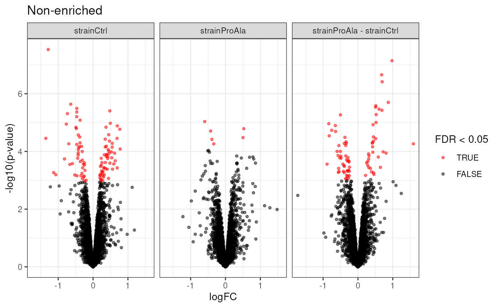
inferences |>
filter(adjPval < alpha) |>
mutate(DA = sign(logFC) |> as.factor() |> recode("-1"= "down","1" = "up")) |>
group_by(contrast, DA) |>
ggplot(aes(x = contrast)) +
geom_bar(aes(fill = factor(DA)),
colour = "black") +
theme_minimal() +
theme(axis.text.x = element_text(angle = 90))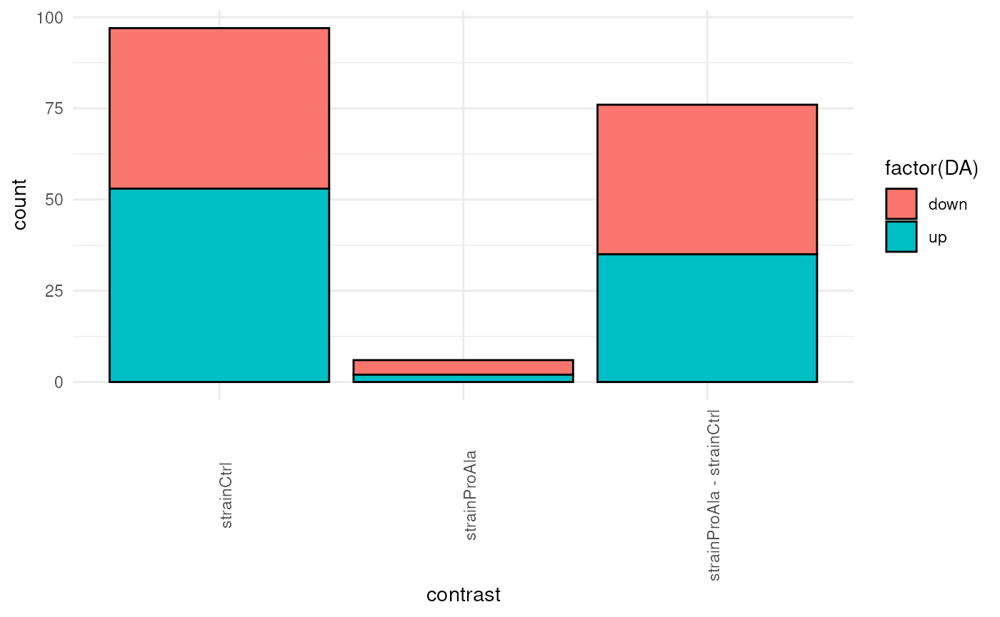
We notice that many proteins are DA at the nominal 5% FDR-level.
Heatmaps
lapply(colnames(L),
function(contrast, se, alpha)
{
sig <- rowData(se)[[contrast]] |>
filter(adjPval < alpha) |>
rownames()
quants <- t(scale(t(assay(se[sig,]))))
colnames(quants) <- se$sampleId #specific to this dataset to get short colnames
rowclushlp <- quants
rowclushlp[is.na(rowclushlp)] <- min(quants,na.rm=TRUE) - 2
rowclus <- hclust(dist(rowclushlp))
annotations <- columnAnnotation(
group = se$strain
) #3.
set.seed(1234) ## annotation colours are randomly generated by default
return(
Heatmap(show_row_names = FALSE,
quants,
name = "log2 intensity",
top_annotation = annotations,
column_title = paste0(contrast, " = 0"),
cluster_rows = rowclus
)
)
},
se = getWithColData(qf, "proteins"),
alpha = alpha)## [[1]]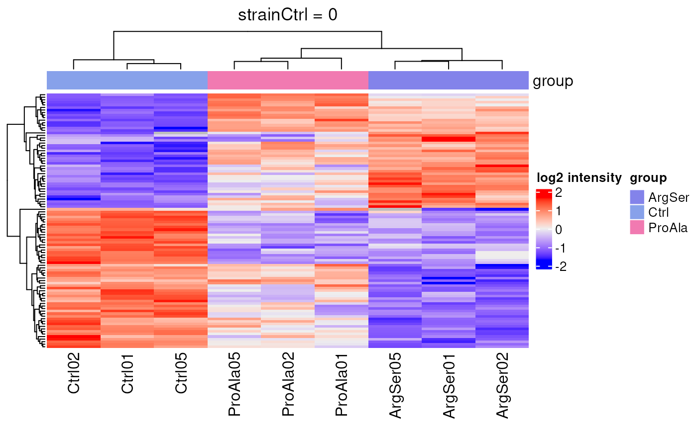
##
## [[2]]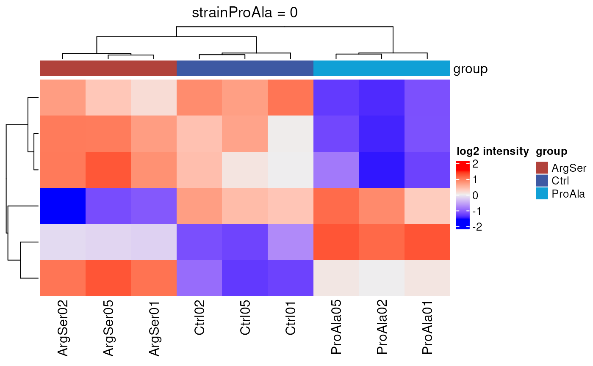
##
## [[3]]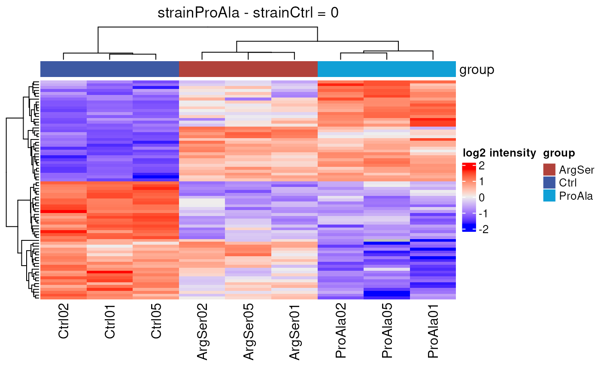
Detail plots
We can explore the data for a protein to validate the statistical inference results. For example, let’s explore the normalised precursor and the summarised protein intensities for the protein with the most significant log2 fold change.
## [1] "Q12068"
inferences |>
filter(feature == target_feature)## logFC se df t
## strainCtrl.Q12068 -1.2860137 0.06203242 8.025332 -20.731318
## strainProAla.Q12068 -0.5967596 0.06052633 8.025332 -9.859504
## strainProAla - strainCtrl.Q12068 0.6892542 0.06203242 8.025332 11.111194
## pval adjPval
## strainCtrl.Q12068 2.952056e-08 0.0001276764
## strainProAla.Q12068 9.225126e-06 0.0283928311
## strainProAla - strainCtrl.Q12068 3.750496e-06 0.0020276119
## contrast feature
## strainCtrl.Q12068 strainCtrl Q12068
## strainProAla.Q12068 strainProAla Q12068
## strainProAla - strainCtrl.Q12068 strainProAla - strainCtrl Q12068To obtain the required data, we perform a little data manipulation pipeline:
- We use the QFeatures subsetting functionality to retrieve all data related to and focusing on the precursors_log and proteins sets that contains the peptide ion data used for model fitting.
- We then convert the data with longForm() for plotting.
- Finally, we plot the log2 normalised intensities for each sample at the protein and at the peptide level. Since multiple peptides are recorded for the protein, we link peptides across samples using a grey line. Samples are colored according to strain.
qf[target_feature, , c("precursors_log","precursors_norm", "proteins")] |> #1
longForm(colvars = colnames(colData(qf))) |> #2
data.frame() |>
ggplot() +
aes(x = colname,
y = value) +
geom_line(aes(group = rowname), linewidth = 0.1) +
geom_point(aes(colour = strain)) +
facet_wrap(~ assay, scales = "free") +
ggtitle(target_feature) +
theme_minimal() +
theme(axis.text.x = element_blank())## Warning: 'experiments' dropped; see 'drops()'## harmonizing input:
## removing 36 sampleMap rows not in names(experiments)
## removing 9 colData rownames not in sampleMap 'primary'## Warning: Removed 30 rows containing missing values or values outside the scale range
## (`geom_line()`).## Warning: Removed 64 rows containing missing values or values outside the scale range
## (`geom_point()`).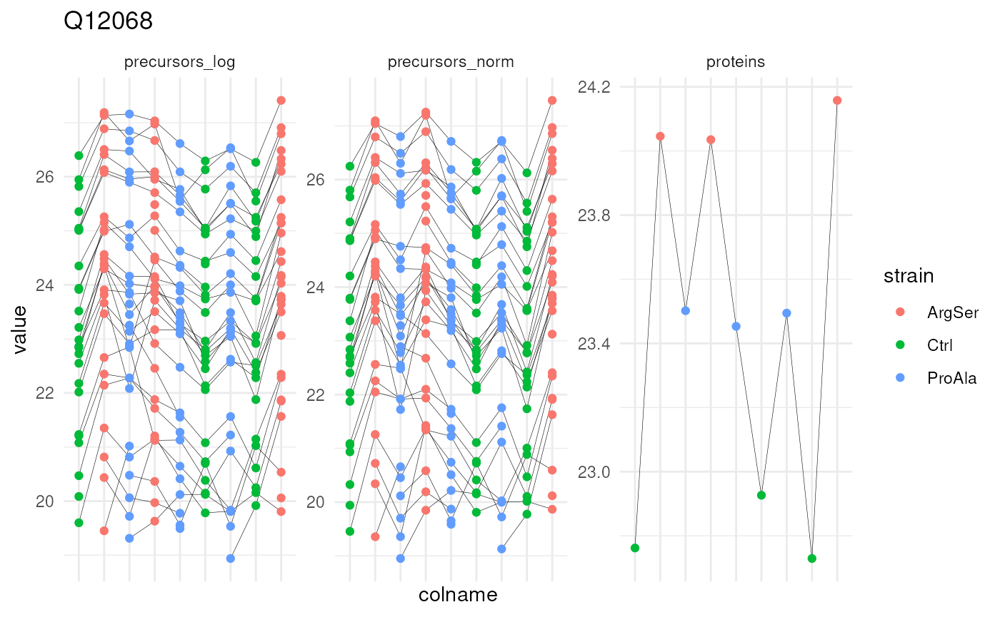
qf[target_feature, , c("precursors_log","precursors_norm", "proteins")] |> #1
longForm(colvars = colnames(colData(qf))) |> #2
data.frame() |>
filter(!is.na(value)) %>%
{
ggplot(.) +
aes(x = strain,
y = value) +
geom_boxplot(aes(colour = strain)) +
facet_wrap(~ assay, scales = "free") +
geom_jitter(aes(shape = rowname)) +
scale_shape_manual(values = seq_len(dplyr::n_distinct(.$rowname))) +
ggtitle(target_feature) +
theme_minimal() +
theme(axis.text.x = element_blank()) +
guides(shape = "none")
}## harmonizing input:
## removing 36 sampleMap rows not in names(experiments)
## removing 9 colData rownames not in sampleMap 'primary'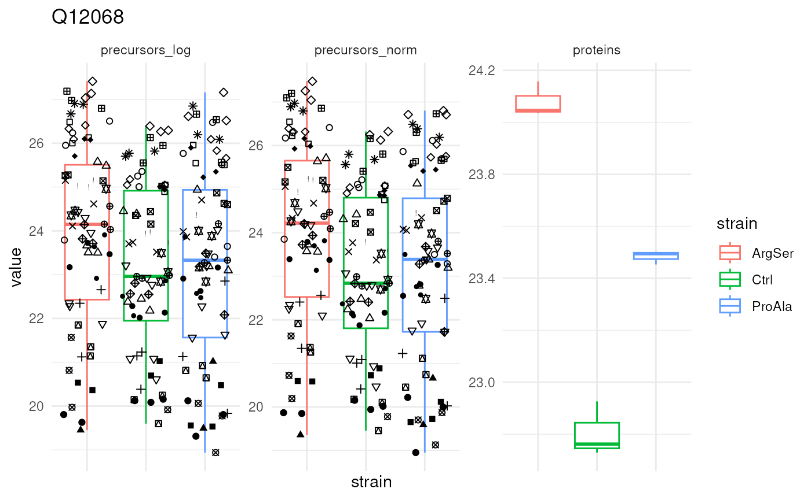
Compare phospo-precursor level intensities to protein level intensities
We compare the intensities for the top 5 DA phospo-precursors for the first contrast to these of their corresponding protein in the non-enriched assay.
contr = colnames(L)[1]
top5 <- inferencesPTM |>
filter(contrast == contr) |>
arrange(pval) |>
head(n = 5) |>
pull(feature)
for (feat in top5)
{
ptm_data <- qf[,,c("precursorsPTM_norm")] |>
longForm(colvars = colnames(colData(qf)), rowvars = "Protein.Group") |>
data.frame() |>
filter(rowname==feat)
feature_protein <- ptm_data |>
pull("Protein.Group") |>
unique()
prot_data <- qf[,,"proteins"]|>
longForm(colvars = colnames(colData(qf)), rowvars = "Protein.Group") |>
data.frame() |>
filter(Protein.Group==feature_protein)
ptm_protein <- rbind(ptm_data, prot_data)
ylims <- ptm_protein |>
group_by(assay) |>
summarise(cent = mean(range(value,na.rm=TRUE)), ampl = diff(range(value,na.rm=TRUE))) |>
mutate(lower = cent - max(ampl)/2,
upper = cent + max(ampl)/2) |>
select(-c(cent, ampl))
comparison_plot <- ptm_protein |>
ggplot() +
aes(x = sampleId,
y = value) +
geom_line(aes(group = rowname), linewidth = 0.1) +
geom_point(aes(colour = strain)) +
facet_wrap(~ assay, scales = "free") +
labs(
title = paste0(feat," / ", feature_protein),
subtitle = paste("padj PTM =",
inferencesPTM |>
filter(feature == feat & contrast == contr) |>
pull(adjPval) |>
round(digits = 3))
) +
theme_minimal() +
theme(axis.text.x = element_blank()) +
ggh4x::facetted_pos_scales(
y = list(
assay == ylims$assay[1] ~ scale_y_continuous(limits = unlist(ylims[1,c("lower","upper")])),
assay == ylims$assay[2] ~ scale_y_continuous(limits = unlist(ylims[2,c("lower","upper")])),
assay == ylims$assay[3] ~ scale_y_continuous(limits = unlist(ylims[3,c("lower","upper")]))
)
)
print(comparison_plot)
}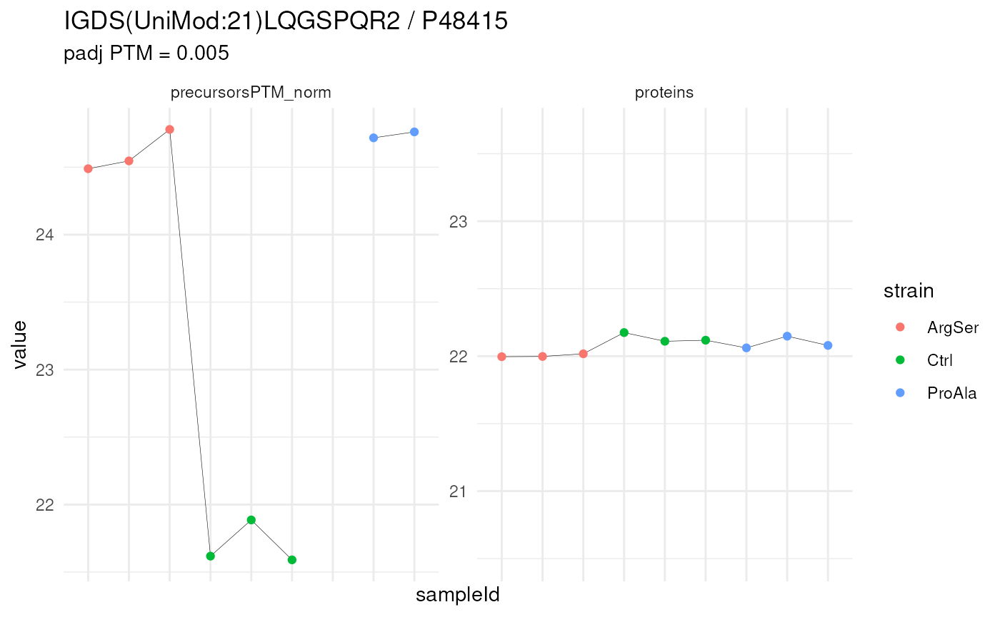
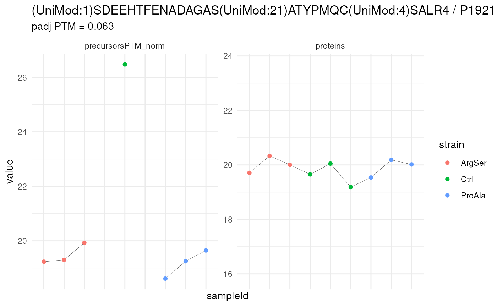
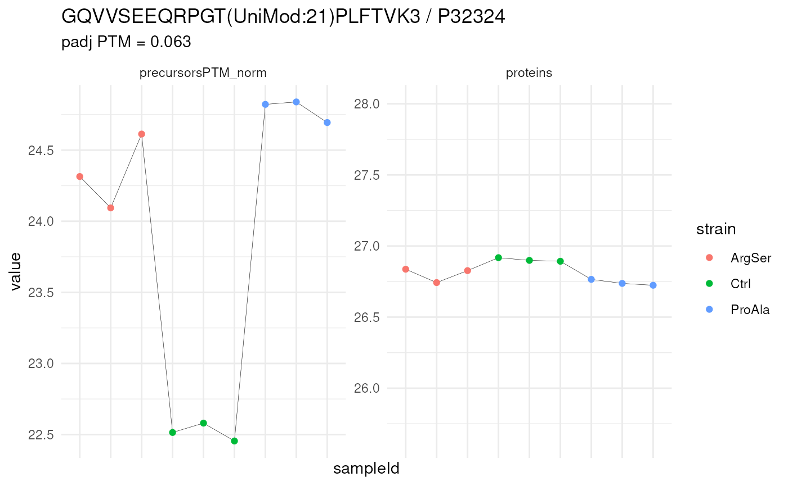
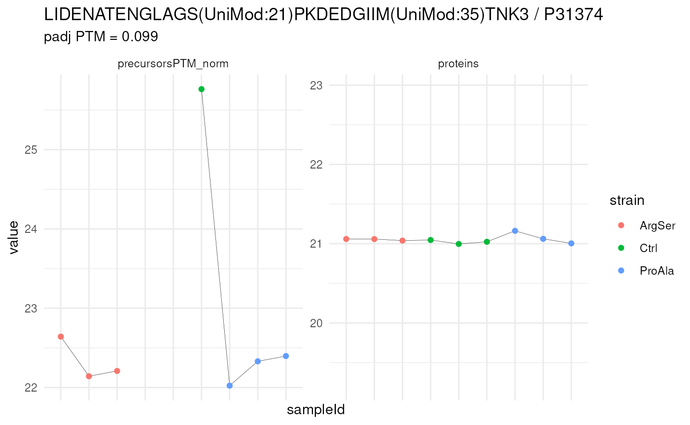
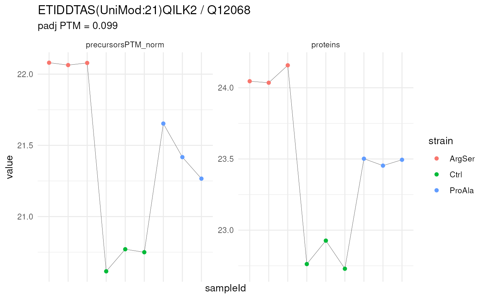
## used (Mb) gc trigger (Mb) max used (Mb)
## Ncells 11805193 630.5 20894551 1115.9 20894551 1115.9
## Vcells 31495371 240.3 86059505 656.6 262535340 2003.0## used (Mb) gc trigger (Mb) max used (Mb)
## Ncells 11805194 630.5 20894551 1115.9 20894551 1115.9
## Vcells 31495409 240.3 86059505 656.6 262535340 2003.0Data Modeling of phospho-peptidoform usages
Background
Differential abundant PTMs can be due protein abundance
Port concept of differential usage towards PTMs:
Two designs: PTM and protein level quantification be done
- on same sample: paired design
- using independent samples
Paired samples
-
Perform regular data processing at the protein-level:
- log2-transformation,
- normalisation and
- summarisation
Calculate relative log2 transformed abundances at peptidoform level
Perform conventional differential msqrob2 analysis on the relative peptidoform level. Immediately gives us diferential usages!
Optionally
- aggregate relative log2 transformed abundances at peptidoform level at PTM-level
- perform a differential msqrob2 analysis at PTM-level
Unpaired samples: calculate usages
We first define a function to correct phospho-precursor-level log-FC with non-enriched logFC.
- Matches the phospho-precursor to the non-enriched Protein.Group
- For each contrast
- 2.1. Extracts the inference results for the contrast at tc protein level
- 2.2. Adds them to the inference results for the contrast at the lip precursor level
- 2.3. Calculates the lip relative differential abundance (RDA), i.e. the logFC corrected for the tc logFC at the protein level and the corresponding inference
calculate_usage <- function(qf,
i_ptm,
i_ne,
contrasts,
fcol_ptm = "Protein.Group",
fcol_ne = "Protein.Group",
satterthwaite = FALSE)
{
match_precursor_to_protein_FC <- match(rowData(qf[[i_ptm]])[[fcol_ptm]],
rowData(qf[[i_ne]])[[fcol_ne]]) #1.
for (contrast in contrasts)
{
results_ne <- rowData(qf[[i_ne]])[[contrast]] #2.1
colnames(results_ne) <- results_ne |>
colnames() |>
paste0("_ne")
rowData(qf[[i_ptm]])[[contrast]] <- cbind(
rowData(qf[[i_ptm]])[[contrast]],
results_ne[match_precursor_to_protein_FC,]) |> #2.2
mutate(
logUsage = logFC - logFC_ne, #2.3
se_usage = sqrt(se^2 + se_ne^2),
t_usage = logUsage /se_usage,
df_usage = if (satterthwaite) (se^2 + se_ne^2)^2/(se^4/df + se_ne^4/df_ne) else df,
pval_usage = pt(abs(t_usage), df_usage, lower.tail = FALSE)*2,
adjPval_usage = p.adjust(pval_usage, method = "fdr")
)
}
return(qf)
}Calculate log-transformed usages (relative differential abundances).
qf <- calculate_usage(qf, i_ptm = "precursorsPTM_norm", i_ne = "proteins", contrasts = colnames(L))We extract the results table from the precursorsPTM_norm
summarised experiment in the qf object.
inferencesUsage <-
msqrobCollect(qf[["precursorsPTM_norm"]], L) |>
relocate(contains("sage"))Report results
We report the results using a results table, volcano plots and heatmaps.
Results table
for (j in colnames(L)) {
inference <- inferencesUsage |>
dplyr::filter(adjPval_usage < alpha & contrast == j)
cat("**Median - Contrast:**", j, "= 0 (", nrow(inference),
"significant proteins)\n\n")
cat('<div style="max-height:300px; overflow-y:auto;">')
print(
kable(
inference |>
dplyr::arrange(pval) |>
dplyr::relocate(feature),
row.names = FALSE
)
)
cat('</div>')
cat("\n\n\n---\n\n")
}Median - Contrast: strainCtrl = 0 ( 1 significant proteins)
| feature | logUsage | se_usage | t_usage | df_usage | pval_usage | adjPval_usage | logFC | se | df | t | pval | adjPval | logFC_ne | se_ne | df_ne | t_ne | pval_ne | adjPval_ne | contrast |
|---|---|---|---|---|---|---|---|---|---|---|---|---|---|---|---|---|---|---|---|
| IGDS(UniMod:21)LQGSPQR2 | -3.03505 | 0.145956 | -20.79429 | 6.823797 | 2e-07 | 0.0044863 | -2.907071 | 0.1393496 | 6.823797 | -20.86171 | 2e-07 | 0.0045824 | 0.1279785 | 0.0434146 | 7.691138 | 2.947823 | 0.0193105 | 0.2020316 | strainCtrl |
Median - Contrast: strainProAla = 0 ( 1 significant proteins)
| feature | logUsage | se_usage | t_usage | df_usage | pval_usage | adjPval_usage | logFC | se | df | t | pval | adjPval | logFC_ne | se_ne | df_ne | t_ne | pval_ne | adjPval_ne | contrast |
|---|---|---|---|---|---|---|---|---|---|---|---|---|---|---|---|---|---|---|---|
| AVQES(UniMod:21)DS(UniMod:21)TTS(UniMod:21)RIIEEHESPIDAEK3 | -4.030539 | 0.1703048 | -23.66662 | 5.826762 | 5e-07 | 0.0115919 | -3.860267 | 0.1557383 | 5.826762 | -24.78688 | 4e-07 | 0.0092686 | 0.1702728 | 0.0689151 | 7.259919 | 2.470761 | 0.0415959 | 0.4439592 | strainProAla |
Median - Contrast: strainProAla - strainCtrl = 0 ( 10 significant proteins)
| feature | logUsage | se_usage | t_usage | df_usage | pval_usage | adjPval_usage | logFC | se | df | t | pval | adjPval | logFC_ne | se_ne | df_ne | t_ne | pval_ne | adjPval_ne | contrast |
|---|---|---|---|---|---|---|---|---|---|---|---|---|---|---|---|---|---|---|---|
| IGDS(UniMod:21)LQGSPQR2 | 3.083551 | 0.1621974 | 19.011104 | 6.823797 | 4.00e-07 | 0.0056589 | 3.0414472 | 0.1557899 | 6.823797 | 19.522750 | 3.00e-07 | 0.0054041 | -0.0421039 | 0.0451386 | 7.691138 | -0.9327696 | 0.3792903 | 0.7360261 | strainProAla - strainCtrl |
| AVQES(UniMod:21)DS(UniMod:21)TTS(UniMod:21)RIIEEHESPIDAEK3 | -3.760445 | 0.1703048 | -22.080674 | 5.826762 | 8.00e-07 | 0.0056589 | -3.7465156 | 0.1557383 | 5.826762 | -24.056476 | 5.00e-07 | 0.0054041 | 0.0139291 | 0.0689151 | 7.259919 | 0.2021199 | 0.8453706 | 0.9464190 | strainProAla - strainCtrl |
| GQVVSEEQRPGT(UniMod:21)PLFTVK3 | 2.429293 | 0.1399846 | 17.353996 | 6.779026 | 7.00e-07 | 0.0056589 | 2.2682125 | 0.1336666 | 6.779026 | 16.969186 | 8.00e-07 | 0.0064050 | -0.1610802 | 0.0415806 | 7.905879 | -3.8739220 | 0.0048235 | 0.1091706 | strainProAla - strainCtrl |
| (UniMod:1)SDS(UniMod:21)EVNQEAKPEVK2 | 2.069516 | 0.1548779 | 13.362241 | 6.038833 | 1.03e-05 | 0.0430580 | 2.0997487 | 0.1203906 | 6.038833 | 17.441138 | 2.10e-06 | 0.0123465 | 0.0302326 | 0.0974335 | 7.480058 | 0.3102896 | 0.7648089 | 0.9237080 | strainProAla - strainCtrl |
| (UniMod:1)SDEEHTFENADAGAS(UniMod:21)ATYPMQC(UniMod:4)SALR4 | -7.571695 | 0.5259604 | -14.395941 | 5.736513 | 1.01e-05 | 0.0430580 | -7.2887717 | 0.4604139 | 5.736513 | -15.830911 | 5.90e-06 | 0.0233619 | 0.2829234 | 0.2542704 | 8.299970 | 1.1126872 | 0.2970287 | 0.6743564 | strainProAla - strainCtrl |
| LTNMPFGGNPTANQSGS(UniMod:21)GNSLFGTK3 | -2.481660 | 0.2316247 | -10.714143 | 6.646603 | 1.95e-05 | 0.0430580 | -2.4850090 | 0.2265396 | 6.646603 | -10.969426 | 1.68e-05 | 0.0392179 | -0.0033487 | 0.0482683 | 8.061131 | -0.0693763 | 0.9463802 | 0.9813221 | strainProAla - strainCtrl |
| LIDENATENGLAGS(UniMod:21)PKDEDGIIM(UniMod:35)TNK3 | -3.558396 | 0.2759168 | -12.896628 | 5.765748 | 1.80e-05 | 0.0430580 | -3.5131571 | 0.2707854 | 5.765748 | -12.973952 | 1.74e-05 | 0.0392179 | 0.0452389 | 0.0529653 | 7.042862 | 0.8541244 | 0.4211353 | 0.7647700 | strainProAla - strainCtrl |
| RAT(UniMod:21)YAGFLLADPK3 | 2.714200 | 0.2598096 | 10.446880 | 6.826762 | 1.91e-05 | 0.0430580 | 2.5531200 | 0.2564607 | 6.826762 | 9.955209 | 2.60e-05 | 0.0392179 | -0.1610802 | 0.0415806 | 7.905879 | -3.8739220 | 0.0048235 | 0.1091706 | strainProAla - strainCtrl |
| RGQVVSEEQRPGT(UniMod:21)PLFTVK3 | 1.980821 | 0.2099440 | 9.434995 | 7.695480 | 1.70e-05 | 0.0430580 | 1.8197408 | 0.2057852 | 7.695480 | 8.842913 | 2.69e-05 | 0.0392179 | -0.1610802 | 0.0415806 | 7.905879 | -3.8739220 | 0.0048235 | 0.1091706 | strainProAla - strainCtrl |
| ETVES(UniMod:21)ESSQTALSK2 | 1.147984 | 0.1163875 | 9.863466 | 7.253952 | 1.85e-05 | 0.0430580 | 0.9869042 | 0.1087065 | 7.253952 | 9.078612 | 3.24e-05 | 0.0392179 | -0.1610802 | 0.0415806 | 7.905879 | -3.8739220 | 0.0048235 | 0.1091706 | strainProAla - strainCtrl |
Volcanoplots
inferencesUsage |>
filter(is.finite(adjPval_usage)) |>
ggplot(aes(x = logUsage,
y = -log10(pval_usage),
col = adjPval_usage < alpha)) +
geom_point(size = 1, alpha = 0.5) +
theme_bw() +
ylab("-log10(p-value)") +
scale_color_manual(values = c(`FALSE` = "black", `TRUE` = "red"),
breaks = c("TRUE", "FALSE")) +
labs(color = paste0("FDR < ", alpha)) +
facet_wrap(~contrast) +
labs(title = "Usage")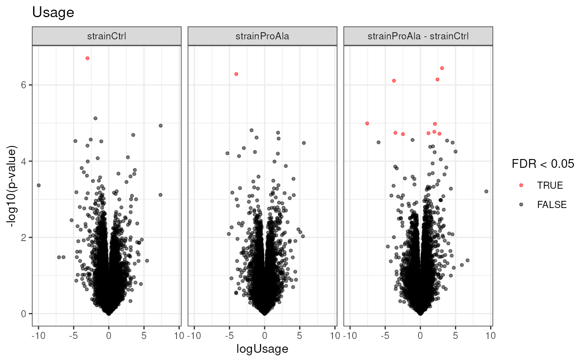
inferencesUsage |>
filter(adjPval_usage < alpha) |>
mutate(DA = sign(logUsage) |> as.factor() |> recode("-1"= "down","1" = "up")) |>
group_by(contrast, DA) |>
ggplot(aes(x = contrast)) +
geom_bar(aes(fill = factor(DA)),
colour = "black") +
theme_minimal() +
theme(axis.text.x = element_text(angle = 90))
We observe that the number of significant precursors reduced.
Detail plots
We can explore the data for a protein to validate the statistical inference results. For example, let’s explore the normalised precursor abundance as well as the summarised protein intensities for the protein with the most significant log2 fold change.
## [1] "IGDS(UniMod:21)LQGSPQR2"
inferencesUsage |>
filter(feature == target_feature)## logUsage se_usage
## strainCtrl.IGDS(UniMod:21)LQGSPQR2 -3.03504988 0.1459560
## strainProAla.IGDS(UniMod:21)LQGSPQR2 0.04850124 0.1619887
## strainProAla - strainCtrl.IGDS(UniMod:21)LQGSPQR2 3.08355112 0.1621974
## t_usage df_usage
## strainCtrl.IGDS(UniMod:21)LQGSPQR2 -20.7942857 6.823796
## strainProAla.IGDS(UniMod:21)LQGSPQR2 0.2994112 6.823796
## strainProAla - strainCtrl.IGDS(UniMod:21)LQGSPQR2 19.0111043 6.823796
## pval_usage adjPval_usage
## strainCtrl.IGDS(UniMod:21)LQGSPQR2 1.998603e-07 0.004486265
## strainProAla.IGDS(UniMod:21)LQGSPQR2 7.735396e-01 0.999536628
## strainProAla - strainCtrl.IGDS(UniMod:21)LQGSPQR2 3.651055e-07 0.005658940
## logFC se df
## strainCtrl.IGDS(UniMod:21)LQGSPQR2 -2.9070713 0.1393496 6.823796
## strainProAla.IGDS(UniMod:21)LQGSPQR2 0.1343759 0.1557591 6.823796
## strainProAla - strainCtrl.IGDS(UniMod:21)LQGSPQR2 3.0414472 0.1557899 6.823796
## t pval
## strainCtrl.IGDS(UniMod:21)LQGSPQR2 -20.861711 1.955531e-07
## strainProAla.IGDS(UniMod:21)LQGSPQR2 0.862716 4.175794e-01
## strainProAla - strainCtrl.IGDS(UniMod:21)LQGSPQR2 19.522750 3.054750e-07
## adjPval logFC_ne
## strainCtrl.IGDS(UniMod:21)LQGSPQR2 0.004582395 0.12797854
## strainProAla.IGDS(UniMod:21)LQGSPQR2 0.986318960 0.08587462
## strainProAla - strainCtrl.IGDS(UniMod:21)LQGSPQR2 0.005404076 -0.04210392
## se_ne df_ne
## strainCtrl.IGDS(UniMod:21)LQGSPQR2 0.04341460 7.691138
## strainProAla.IGDS(UniMod:21)LQGSPQR2 0.04449116 7.691138
## strainProAla - strainCtrl.IGDS(UniMod:21)LQGSPQR2 0.04513861 7.691138
## t_ne pval_ne
## strainCtrl.IGDS(UniMod:21)LQGSPQR2 2.9478228 0.01931048
## strainProAla.IGDS(UniMod:21)LQGSPQR2 1.9301503 0.09116257
## strainProAla - strainCtrl.IGDS(UniMod:21)LQGSPQR2 -0.9327696 0.37929026
## adjPval_ne
## strainCtrl.IGDS(UniMod:21)LQGSPQR2 0.2020316
## strainProAla.IGDS(UniMod:21)LQGSPQR2 0.5886109
## strainProAla - strainCtrl.IGDS(UniMod:21)LQGSPQR2 0.7360261
## contrast
## strainCtrl.IGDS(UniMod:21)LQGSPQR2 strainCtrl
## strainProAla.IGDS(UniMod:21)LQGSPQR2 strainProAla
## strainProAla - strainCtrl.IGDS(UniMod:21)LQGSPQR2 strainProAla - strainCtrl
## feature
## strainCtrl.IGDS(UniMod:21)LQGSPQR2 IGDS(UniMod:21)LQGSPQR2
## strainProAla.IGDS(UniMod:21)LQGSPQR2 IGDS(UniMod:21)LQGSPQR2
## strainProAla - strainCtrl.IGDS(UniMod:21)LQGSPQR2 IGDS(UniMod:21)LQGSPQR2We again make a similar plot as before.
ptm <- qf[target_feature, , c("precursorsPTM_norm")] |> #1
longForm(colvars = colnames(colData(qf)), rowvars = "Protein.Group") |> #2
data.frame()## Warning: 'experiments' dropped; see 'drops()'## harmonizing input:
## removing 54 sampleMap rows not in names(experiments)
## removing 9 colData rownames not in sampleMap 'primary'
protein <- qf[unique(ptm$Protein.Group), , c("proteins")] |> #1
longForm(colvars = colnames(colData(qf)), rowvars = "Protein.Group") |> #2
data.frame()## Warning: 'experiments' dropped; see 'drops()'## harmonizing input:
## removing 54 sampleMap rows not in names(experiments)
## removing 9 colData rownames not in sampleMap 'primary'
ptm_protein <- rbind(ptm, protein)
ylims <- ptm_protein |>
group_by(assay) |>
summarise(cent = mean(range(value,na.rm=TRUE)), ampl = diff(range(value,na.rm=TRUE))) |>
mutate(lower = cent - max(ampl)/2,
upper = cent + max(ampl)/2) |>
select(-c(cent, ampl))
outplot <- ptm_protein |>
ggplot() +
aes(x = colname,
y = value) +
geom_line(aes(group = rowname), linewidth = 0.1) +
geom_point(aes(colour = strain)) +
facet_wrap(~ assay, scales = "free") +
ggh4x::facetted_pos_scales(
y = list(
assay == ylims$assay[1] ~ scale_y_continuous(limits = unlist(ylims[1,c("lower","upper")])),
assay == ylims$assay[2] ~ scale_y_continuous(limits = unlist(ylims[2,c("lower","upper")]))
)
) +
labs(subtitle = target_feature) +
theme_minimal() +
theme(axis.text.x = element_blank())
print(outplot)## Warning: Removed 1 row containing missing values or values outside the scale range
## (`geom_point()`).
rbind(ptm, protein) %>%
{
ggplot(.) +
aes(x = strain,
y = value) +
geom_boxplot(aes(colour = strain)) +
facet_wrap(~ assay, scales = "free") +
geom_jitter(aes(shape = rowname)) +
scale_shape_manual(values = seq_len(dplyr::n_distinct(.$rowname))) +
ggtitle(target_feature) +
theme_minimal() +
theme(axis.text.x = element_blank()) +
guides(shape = "none")
}## Warning: Removed 1 row containing non-finite outside the scale range
## (`stat_boxplot()`).## Warning: Removed 1 row containing missing values or values outside the scale range
## (`geom_point()`).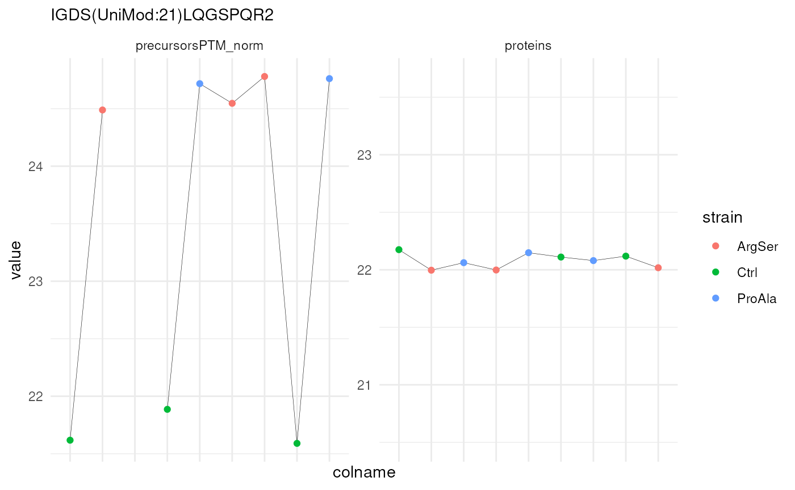
We compare the intensities for the top 5 DA phospo-precursors for the first contrast to these of their corresponding protein in the non-enriched assay and to the usages.
contr = colnames(L)[1]
top5 <- inferencesPTM |>
filter(contrast == contr) |>
arrange(pval) |>
head(n = 5) |>
pull(feature)
for (feat in top5)
{
ptm_data <- qf[,,c("precursorsPTM_norm")] |>
longForm(colvars = colnames(colData(qf)), rowvars = "Protein.Group") |>
data.frame() |>
filter(rowname==feat)
feature_protein <- ptm_data |>
pull("Protein.Group") |>
unique()
prot_data <- qf[,,"proteins"]|>
longForm(colvars = colnames(colData(qf)), rowvars = "Protein.Group") |>
data.frame() |>
filter(Protein.Group==feature_protein)
ptm_protein <- rbind(ptm_data, prot_data)
ylims <- ptm_protein |>
group_by(assay) |>
summarise(cent = mean(range(value,na.rm=TRUE)), ampl = diff(range(value,na.rm=TRUE))) |>
mutate(lower = cent - max(ampl)/2,
upper = cent + max(ampl)/2) |>
select(-c(cent, ampl))
comparison_plot <- ptm_protein |>
ggplot() +
aes(x = sampleId,
y = value) +
geom_line(aes(group = rowname), linewidth = 0.1) +
geom_point(aes(colour = strain)) +
facet_wrap(~ assay, scales = "free") +
labs(
title = paste0(feat," / ", feature_protein),
subtitle = paste("padj PTM =",
inferencesPTM |>
filter(feature == feat & contrast == contr) |>
pull(adjPval) |>
round(digits = 3),
"padj usage =",
inferencesUsage |>
filter(feature == feat & contrast == contr) |>
pull(adjPval_usage) |>
round(digits = 3))
) +
theme_minimal() +
theme(axis.text.x = element_blank()) +
ggh4x::facetted_pos_scales(
y = list(
assay == ylims$assay[1] ~ scale_y_continuous(limits = unlist(ylims[1,c("lower","upper")])),
assay == ylims$assay[2] ~ scale_y_continuous(limits = unlist(ylims[2,c("lower","upper")]))
)
)
print(comparison_plot)
}
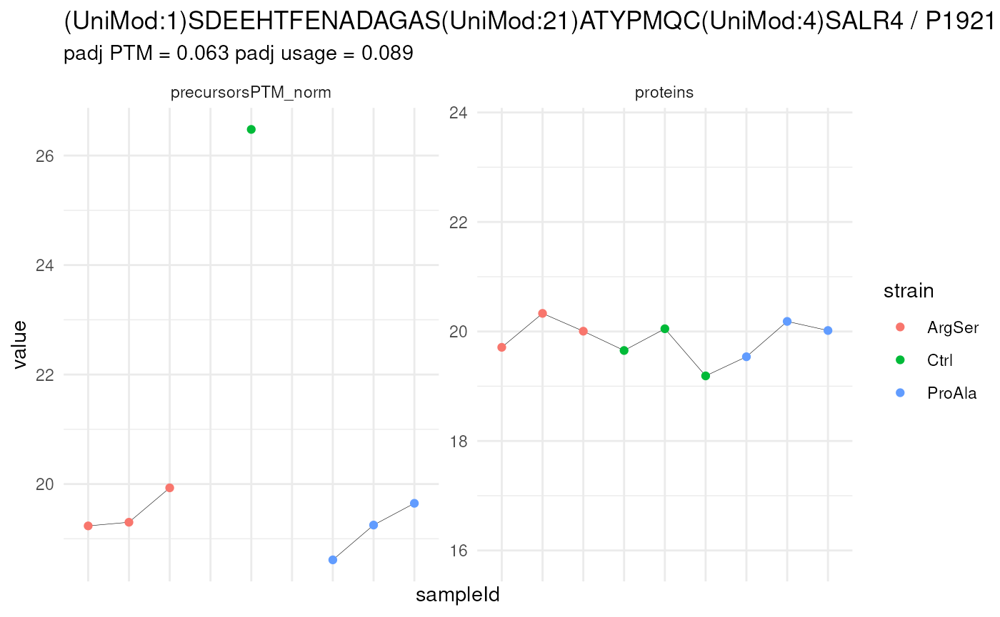


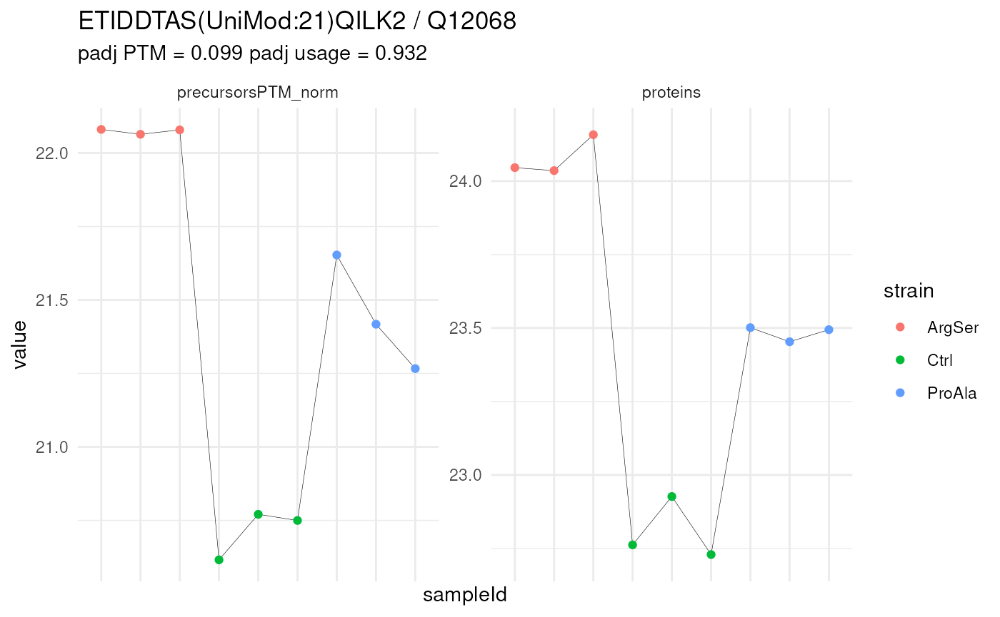
We compare the intensities for the top 5 DU phospo-precursors for the first contrast to these of their corresponding protein in the non-enriched assay and to their unadjusted abundances.
contr = colnames(L)[1]
top5 <- inferencesUsage |>
filter(contrast == contr) |>
arrange(pval_usage) |>
head(n = 5) |>
pull(feature)
for (feat in top5)
{
ptm_data <- qf[,,c("precursorsPTM_norm")] |>
longForm(colvars = colnames(colData(qf)), rowvars = "Protein.Group") |>
data.frame() |>
filter(rowname==feat)
feature_protein <- ptm_data |>
pull("Protein.Group") |>
unique()
prot_data <- qf[,,"proteins"]|>
longForm(colvars = colnames(colData(qf)), rowvars = "Protein.Group") |>
data.frame() |>
filter(Protein.Group==feature_protein)
ptm_protein <- rbind(ptm_data, prot_data)
ylims <- ptm_protein |>
group_by(assay) |>
summarise(cent = mean(range(value,na.rm=TRUE)), ampl = diff(range(value,na.rm=TRUE))) |>
mutate(lower = cent - max(ampl)/2,
upper = cent + max(ampl)/2) |>
select(-c(cent, ampl))
comparison_plot <- ptm_protein |>
ggplot() +
aes(x = sampleId,
y = value) +
geom_line(aes(group = rowname), linewidth = 0.1) +
geom_point(aes(colour = strain)) +
facet_wrap(~ assay, scales = "free") +
labs(
title = paste0(feat," / ", feature_protein),
subtitle = paste("padj PTM =",
inferencesPTM |>
filter(feature == feat & contrast == contr) |>
pull(adjPval) |>
round(digits = 3),
"padj usage =",
inferencesUsage |>
filter(feature == feat & contrast == contr) |>
pull(adjPval_usage) |>
round(digits = 3))
) +
theme_minimal() +
theme(axis.text.x = element_blank()) +
ggh4x::facetted_pos_scales(
y = list(
assay == ylims$assay[1] ~ scale_y_continuous(limits = unlist(ylims[1,c("lower","upper")])),
assay == ylims$assay[2] ~ scale_y_continuous(limits = unlist(ylims[2,c("lower","upper")])))
)
print(comparison_plot)
}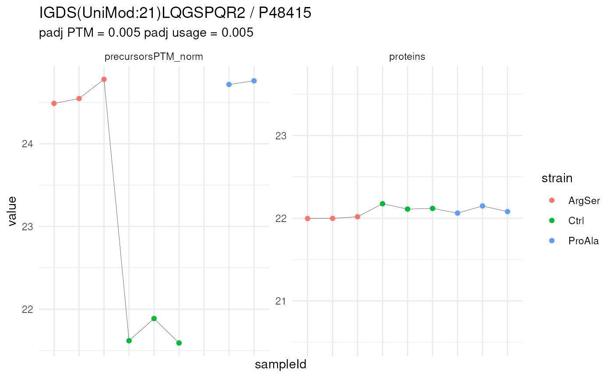
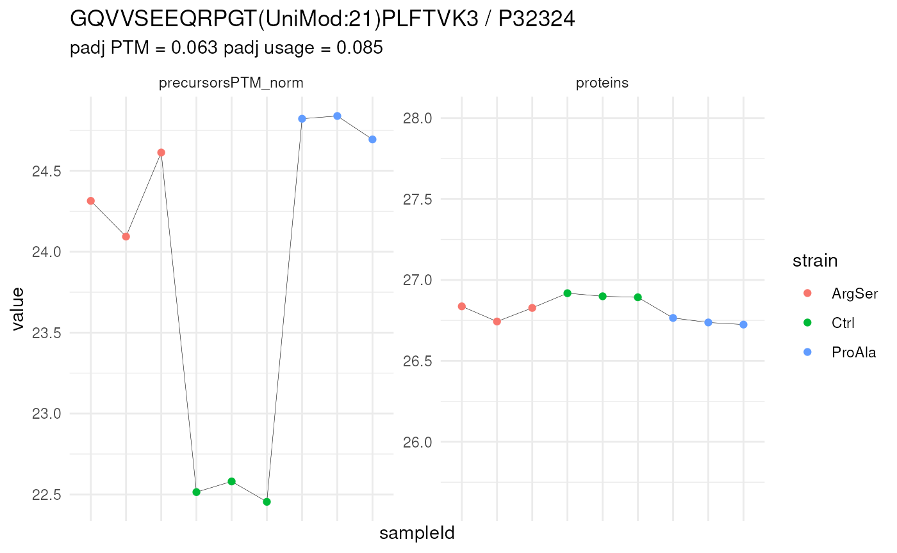

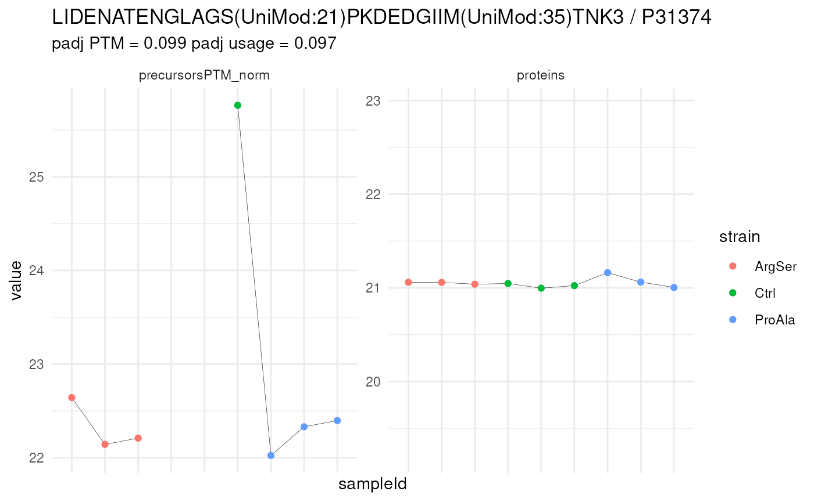
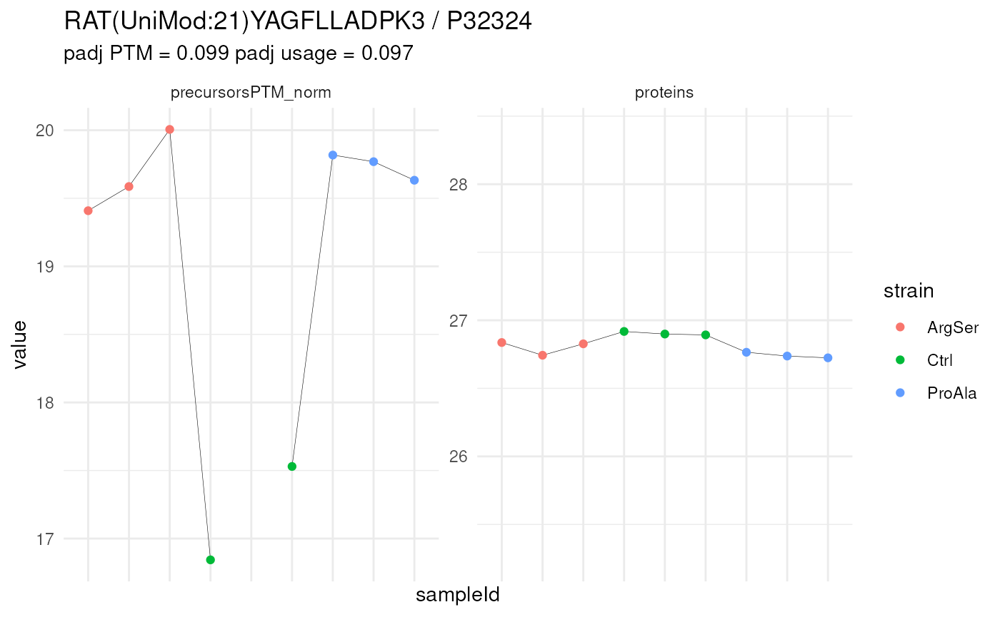
## used (Mb) gc trigger (Mb) max used (Mb)
## Ncells 11821782 631.4 20894551 1115.9 20894551 1115.9
## Vcells 34908090 266.4 86059505 656.6 262535340 2003.0## used (Mb) gc trigger (Mb) max used (Mb)
## Ncells 11821774 631.4 20894551 1115.9 20894551 1115.9
## Vcells 34908113 266.4 86059505 656.6 262535340 2003.0Differential usage analysis at the PTM level
Multiple precursors are carrying the same PTM (cover the PTM at a certain position in the protein). We can aggregate them together.
- Here we first aggregate the precursor level abundances
- Calculate the DA at the PTM-level
- Correct the DA at PTM-level with the DA at the protein level to obtain the usages
Data processing
The variable Protein.Sites in the DIA-NN parquet file contains information on the exact modified residue position in the full protein sequence.
We first will make a new assay with duplicates for the precursors that contain multiple phospho sites.
- We extract the percursor-level assay
- We extract the row data with the original variables (drop msqrob2 colums)
- Add a new variable with the modification type (21 is phosho)
- Add a new variable with the location of the modification on the original protein
- replace the rowData of se
- Make vector of the row numbers with duplicates for the sequences containing multiple PTMs
- Make a corresponding vector with the positions of the individual PTM sites
- Make a corresponding vector with the modification type
- Extract the ids of rows that correspond to phospho sites
- Make a new summarised experiment with duplicate entries for precursors with multiple phospho sites.
- Add the position of the phospho site
- Add a variable with the Protein.Group name and the phospho site position attached to it.
- Make the rownames unique by appending the phospho site position to it.
- Add the assay to the QFeatures object.
se <- qf[["precursorsPTM_norm"]] #1.
rd <- rowData(se)[,names(rowData(qf[["precursorsPTM"]]))] |> ##2.
as.data.frame() |>
mutate(
mods = str_extract_all(Modified.Sequence,
"UniMod:[0-9]+") |>
lapply(FUN = gsub, pattern="UniMod:",replacement=""), ##3.
pos = str_extract(Protein.Sites,
"(?<=:)[^\\]]+") |>
strsplit(split = ",") |>
lapply(FUN=substr,start=2,stop=10000) |>
lapply(FUN=as.integer) ##4.
)
rowData(se) <- rd ##5.
ids <- rep(rd |>
nrow() |>
seq_len(),
rd |>
pull(pos) |>
sapply(FUN = length))##6.
pos <- unlist(rd$pos) ##7.
mod <- unlist(rd$mods) ##8.
phosIds <- ids[mod == "21"] ##9.
seDup <- se[phosIds,] ##10.
rowData(seDup)$pos <- pos[mod == "21"] ##11.
rowData(seDup)$Protein.Group.Mod <- paste(
rowData(seDup)$Protein.Group,
rowData(seDup)$pos, sep = "_") ##12.
rownames(seDup) <- paste(rownames(seDup), rowData(seDup)$pos, sep = "_") ##13.
qf <- addAssay(qf, seDup, "precursorsPTM_norm_unnested") ##14.We now aggregate the data of precursors that map to the same PTM position on a protein in one protein expression value.
qf <- aggregateFeatures(qf,
i = "precursorsPTM_norm_unnested",
fcol = "Protein.Group.Mod",
name = "ptm",
fun = function(X, ...) iq::maxLFQ(X)$estimate
)## | | | 0% | |======================================================================| 100%## The following messages occurred during aggregation:##
## Your quantitative data contain missing values. Please read the relevant
## section(s) in the aggregateFeatures manual page regarding the effects
## of missing values on data aggregation.
##
## Occurred during the aggregation of set(s): precursorsWe assess the distribution of the PTM usages.
qf[, , "ptm"] |> #1.
longForm(colvars = colnames(colData(qf))) |> #2.
data.frame() |>
filter(!is.na(value)) |>
ggplot() + #3.
aes(x = value,
colour = strain,
group = colname) +
geom_density() +
labs(subtitle = "PTM") +
theme_minimal()## harmonizing input:
## removing 72 sampleMap rows not in names(experiments)
## removing 9 colData rownames not in sampleMap 'primary'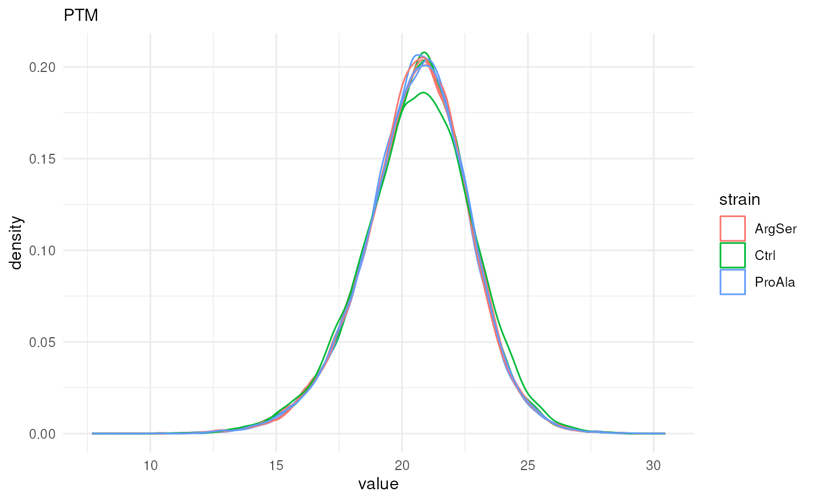
We remove temporarily objects
rm(se, seDup, mod, pos, ids, phosIds)## used (Mb) gc trigger (Mb) max used (Mb)
## Ncells 12017857 641.9 20894551 1115.9 20894551 1115.9
## Vcells 39708680 303.0 86059505 656.6 262535340 2003.0## used (Mb) gc trigger (Mb) max used (Mb)
## Ncells 12017858 641.9 20894551 1115.9 20894551 1115.9
## Vcells 39708718 303.0 86059505 656.6 262535340 2003.0Model estimation
Again we can estimate the same model but now for the usages.
qf <- msqrob(
qf,
i = "ptm",
formula = model,
robust = TRUE)We enabled M-estimation (robust = TRUE) for improved
robustness against outliers.
## used (Mb) gc trigger (Mb) max used (Mb)
## Ncells 12437523 664.3 20894551 1115.9 20894551 1115.9
## Vcells 40812503 311.4 86059505 656.6 262535340 2003.0## used (Mb) gc trigger (Mb) max used (Mb)
## Ncells 12437530 664.3 20894551 1115.9 20894551 1115.9
## Vcells 40812551 311.4 86059505 656.6 262535340 2003.0Inference
Contrasts remain the same. We assess the contrast for each precursor.
qf <- hypothesisTest(qf, i = "ptm", contrast = L)Calculate log-transformed usages (relative differential abundances).
qf <- calculate_usage(qf, i_ptm = "ptm", i_ne = "proteins", contrasts = colnames(L))We extract the results table from the proteins
summarised experiment in the qf object.
inferencesPtmUsage <-
msqrobCollect(qf[["ptm"]], L) |>
relocate(contains("sage"))## used (Mb) gc trigger (Mb) max used (Mb)
## Ncells 12504601 667.9 20894551 1115.9 20894551 1115.9
## Vcells 43779539 334.1 86059505 656.6 262535340 2003.0## used (Mb) gc trigger (Mb) max used (Mb)
## Ncells 12504602 667.9 20894551 1115.9 20894551 1115.9
## Vcells 43779577 334.1 86059505 656.6 262535340 2003.0Report results
We report the results using a results table, volcano plots and heatmaps.
Results table
for (j in colnames(L)) {
inference <- inferencesPtmUsage |>
dplyr::filter(adjPval_usage < alpha & contrast == j)
cat("**Median - Contrast:**", j, "= 0 (", nrow(inference),
"significant proteins)\n\n")
cat('<div style="max-height:300px; overflow-y:auto;">')
print(
kable(
inference |>
dplyr::arrange(pval) |>
dplyr::relocate(feature),
row.names = FALSE
)
)
cat('</div>')
cat("\n\n\n---\n\n")
}Median - Contrast: strainCtrl = 0 ( 0 significant proteins)
| feature | logUsage | se_usage | t_usage | df_usage | pval_usage | adjPval_usage | logFC | se | df | t | pval | adjPval | logFC_ne | se_ne | df_ne | t_ne | pval_ne | adjPval_ne | contrast |
|---|
Median - Contrast: strainProAla = 0 ( 0 significant proteins)
| feature | logUsage | se_usage | t_usage | df_usage | pval_usage | adjPval_usage | logFC | se | df | t | pval | adjPval | logFC_ne | se_ne | df_ne | t_ne | pval_ne | adjPval_ne | contrast |
|---|
Median - Contrast: strainProAla - strainCtrl = 0 ( 1 significant proteins)
| feature | logUsage | se_usage | t_usage | df_usage | pval_usage | adjPval_usage | logFC | se | df | t | pval | adjPval | logFC_ne | se_ne | df_ne | t_ne | pval_ne | adjPval_ne | contrast |
|---|---|---|---|---|---|---|---|---|---|---|---|---|---|---|---|---|---|---|---|
| P32324_763 | 2.255204 | 0.1526572 | 14.77299 | 6.603385 | 2.6e-06 | 0.0426618 | 2.094123 | 0.1468852 | 6.603385 | 14.25687 | 3.3e-06 | 0.0504516 | -0.1610802 | 0.0415806 | 7.905879 | -3.873922 | 0.0048235 | 0.1091706 | strainProAla - strainCtrl |
Volcanoplots
inferencesPtmUsage |>
filter(is.finite(adjPval_usage)) |>
ggplot(aes(x = logUsage,
y = -log10(pval_usage),
col = adjPval_usage < alpha)) +
geom_point(size = 1, alpha = 0.5) +
theme_bw() +
ylab("-log10(p-value)") +
scale_color_manual(values = c(`FALSE` = "black", `TRUE` = "red"),
breaks = c("TRUE", "FALSE")) +
labs(color = paste0("FDR < ", alpha)) +
facet_wrap(~contrast) +
labs(title = "Usage")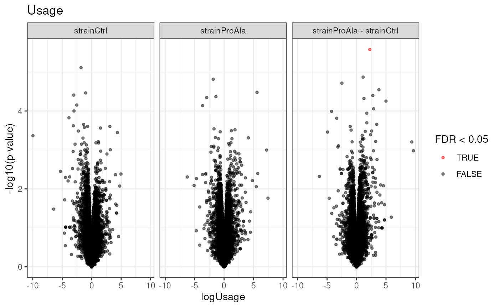
inferencesPtmUsage |>
filter(adjPval_usage < alpha) |>
mutate(DA = sign(logUsage) |> as.factor() |> recode("-1"= "down","1" = "up")) |>
group_by(contrast, DA) |>
ggplot(aes(x = contrast)) +
geom_bar(aes(fill = factor(DA)),
colour = "black") +
theme_minimal() +
theme(axis.text.x = element_text(angle = 90))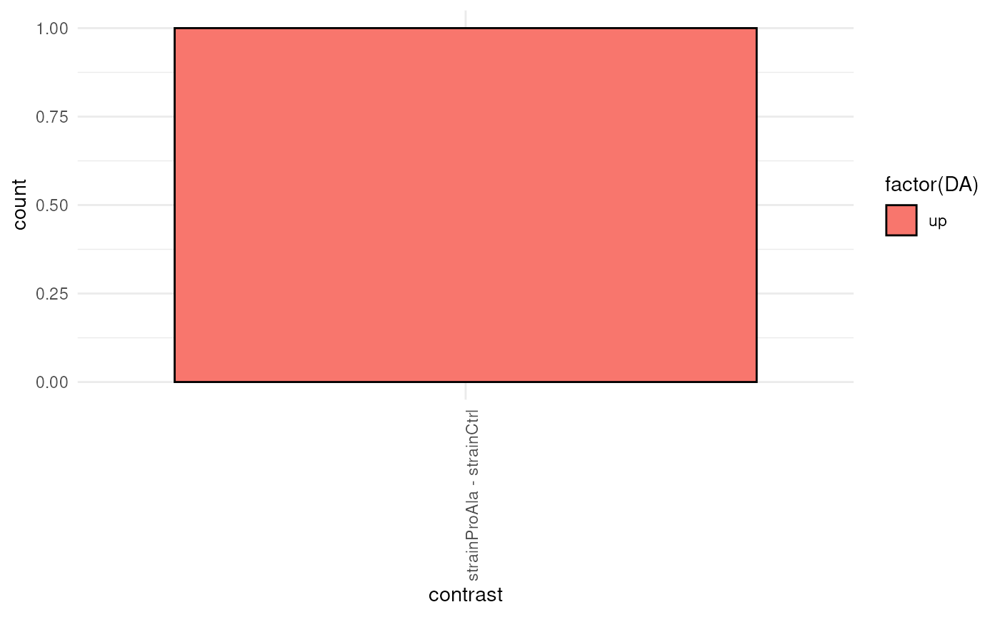
Detail plots
We can explore the data for a protein to validate the statistical inference results. For example, let’s explore the precursor, summarized PTM and summarised protein intensities for the PTM with the most significant log2 fold change.
## [1] "P32324_763"
inferencesPtmUsage |>
filter(feature == target_feature)## logUsage se_usage t_usage df_usage
## strainCtrl.P32324_763 -1.8056571 0.1445337 -12.492983 6.603385
## strainProAla.P32324_763 0.4495465 0.1468314 3.061652 6.603385
## strainProAla - strainCtrl.P32324_763 2.2552036 0.1526572 14.772994 6.603385
## pval_usage adjPval_usage logFC
## strainCtrl.P32324_763 7.727656e-06 0.12603807 -1.7136693
## strainProAla.P32324_763 1.965423e-02 0.89534603 0.3804542
## strainProAla - strainCtrl.P32324_763 2.642745e-06 0.04266183 2.0941234
## se df t pval
## strainCtrl.P32324_763 0.1379504 6.603385 -12.42236 8.011588e-06
## strainProAla.P32324_763 0.1403559 6.603385 2.71064 3.191573e-02
## strainProAla - strainCtrl.P32324_763 0.1468852 6.603385 14.25687 3.321220e-06
## adjPval logFC_ne se_ne df_ne
## strainCtrl.P32324_763 0.13557717 0.09198780 0.04312405 7.905879
## strainProAla.P32324_763 0.73171587 -0.06909236 0.04312405 7.905879
## strainProAla - strainCtrl.P32324_763 0.05045161 -0.16108016 0.04158064 7.905879
## t_ne pval_ne adjPval_ne
## strainCtrl.P32324_763 2.133097 0.065881261 0.3392101
## strainProAla.P32324_763 -1.602177 0.148233033 0.6548959
## strainProAla - strainCtrl.P32324_763 -3.873922 0.004823529 0.1091706
## contrast feature
## strainCtrl.P32324_763 strainCtrl P32324_763
## strainProAla.P32324_763 strainProAla P32324_763
## strainProAla - strainCtrl.P32324_763 strainProAla - strainCtrl P32324_763
ptm <- qf[target_feature, , c("precursorsPTM_norm_unnested", "ptm")] |> #1
longForm(colvars = colnames(colData(qf)), rowvars = "Protein.Group") |> #2
data.frame()## Warning: 'experiments' dropped; see 'drops()'## harmonizing input:
## removing 63 sampleMap rows not in names(experiments)
## removing 9 colData rownames not in sampleMap 'primary'
protein <- qf[unique(ptm$Protein.Group), , c("proteins")] |> #1
longForm(colvars = colnames(colData(qf)), rowvars = "Protein.Group") |> #2
data.frame()## Warning: 'experiments' dropped; see 'drops()'## harmonizing input:
## removing 72 sampleMap rows not in names(experiments)
## removing 9 colData rownames not in sampleMap 'primary'
ptm_protein <- rbind(ptm, protein)
ylims <- ptm_protein |>
group_by(assay) |>
summarise(cent = mean(range(value,na.rm=TRUE)), ampl = diff(range(value,na.rm=TRUE))) |>
mutate(lower = cent - max(ampl)/2,
upper = cent + max(ampl)/2) |>
select(-c(cent, ampl))
ptm_protein |>
filter(!is.na(value)) |>
ggplot() +
aes(x = sampleId,
y = value) +
geom_line(aes(group = rowname), linewidth = 0.1) +
geom_point(aes(colour = strain)) +
facet_wrap(~ assay, scales = "free") +
ggh4x::facetted_pos_scales(
y = list(
assay == ylims$assay[1] ~ scale_y_continuous(limits = unlist(ylims[1,c("lower","upper")])),
assay == ylims$assay[2] ~ scale_y_continuous(limits = unlist(ylims[2,c("lower","upper")])),
assay == ylims$assay[3] ~ scale_y_continuous(limits = unlist(ylims[3,c("lower","upper")]))
)
) +
labs(subtitle = paste0("Protein:", sub("_"," / phosho-position: ", target_feature))) +
theme_minimal() +
theme(axis.text.x = element_blank())
rbind(ptm, protein) %>%
{
ggplot(.) +
aes(x = strain,
y = value) +
geom_boxplot(aes(colour = strain)) +
facet_wrap(~ assay, scales = "free") +
geom_jitter(aes(shape = rowname)) +
scale_shape_manual(values = seq_len(dplyr::n_distinct(.$rowname))) +
labs(subtitle = paste0("Protein:", sub("_"," / phosho-position: ", target_feature))) +
theme_minimal() +
theme(axis.text.x = element_blank()) +
guides(shape = "none")
}## Warning: Removed 5 rows containing non-finite outside the scale range
## (`stat_boxplot()`).## Warning: Removed 5 rows containing missing values or values outside the scale range
## (`geom_point()`).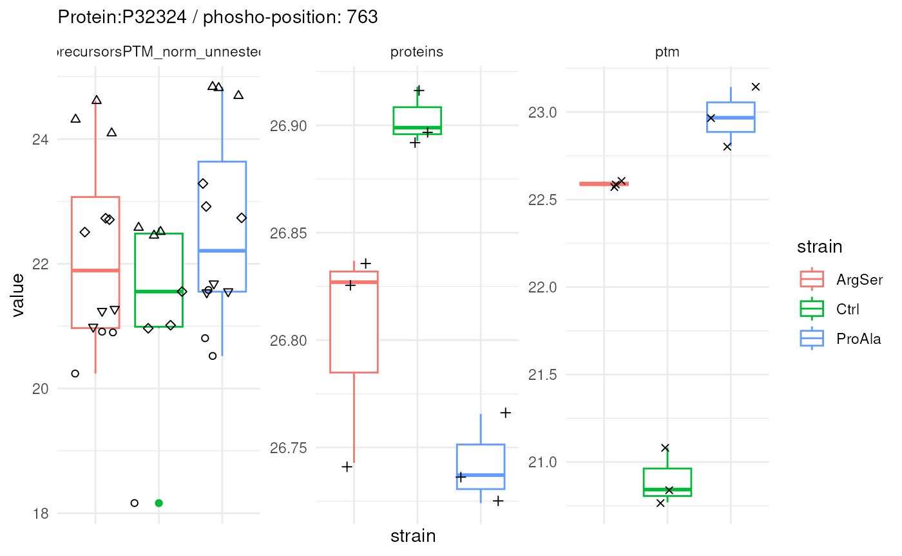
## used (Mb) gc trigger (Mb) max used (Mb)
## Ncells 12505344 667.9 20894551 1115.9 20894551 1115.9
## Vcells 41513991 316.8 86059505 656.6 262535340 2003.0## used (Mb) gc trigger (Mb) max used (Mb)
## Ncells 12505342 667.9 20894551 1115.9 20894551 1115.9
## Vcells 41514024 316.8 86059505 656.6 262535340 2003.0Along Protein Mapping
In this section we will make Along Protein graphs. Therefore we need sequence information on the protein sequence, which we can find in the fasta file from uniprot that was used for mapping.
- Read fasta file (download it from uniprot)
fastaFile <- bfcrpath(bfc,"https://rest.uniprot.org/uniprotkb/stream?compressed=true&download=true&format=fasta&query=%28%28proteome%3AUP000002311%29+AND+reviewed%3Dtrue%29")
fasta <- seqinr::read.fasta(fastaFile, seqtype = "AA", as.string = T) #2.- Extract the proteins from the fasta file.
# read in fasta file for protein sequence & length -> to calculate the coverage
mapping <- data.frame(fullName = fasta |> names(),
accession = fasta |> names() |> stringr::str_split_i("\\|", 2),
sequence = unlist(fasta)) |>
mutate(length = nchar(sequence))
rownames(mapping) <- mapping$accessionPTM barcode plot
We make a barplot for all phosphorylated residues on protein P32324
We first gather the data:
- We extract the protein name
- we filter all PTMs for that protein
- we add the phospho-position in the rowData to it
- we make a new variable type to indicate if the PTM usage is up, down, non-significant or missing
prot <- sub("_.*","", target_feature) ## 1.
ptmListProt <- inferencesPtmUsage |>
filter(grepl(prot, feature)) |> ## 2.
left_join(rowData(qf[["ptm"]]) |>
as.data.frame() |>
select(Protein.Group.Mod, pos),
by = c("feature" = "Protein.Group.Mod")) |> ## 3.
mutate(type = ifelse(is.na(adjPval_usage),
"missing",
ifelse(adjPval_usage < 0.05,
ifelse(logUsage < 0,
"down",
"up"),
"non-sig")) ## 4.
)We make the barplot by adding a geom_point layer and a vertical line (geom_vline) to indicate the residue position.
ptmListProt |>
ggplot(aes(x=pos,y=0,col=type)) +
geom_point() +
geom_vline(aes(xintercept=pos,col=type)) +
xlab("residue") +
ylab("") +
scale_color_manual(values = c("black","grey","blue","red"),
breaks = c("missing","non-sig","down", "up")) +
theme(
axis.ticks.y = element_blank(),
axis.text.y = element_blank(),
panel.grid = element_blank(),
panel.background = element_blank(),
panel.border = element_rect(color = "black", fill = NA),
strip.background = element_rect(color = "black")
) +
xlim(0, mapping[prot,"length"]) +
ggtitle(paste0(prot, ": Phospho residues")) +
facet_grid(contrast~.) 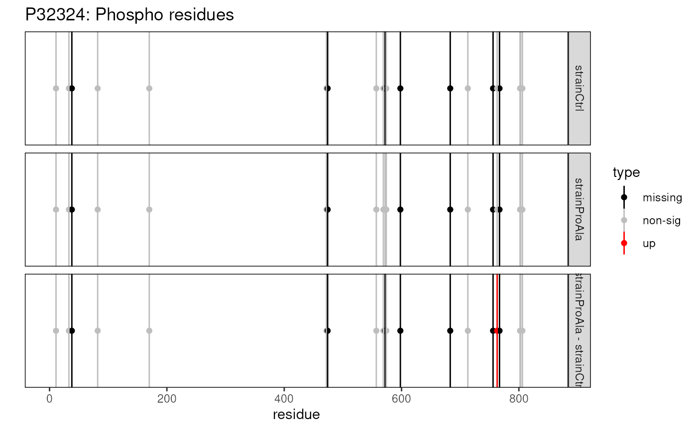
Along protein plot for all precursors
We first gather the data from all precursors that map to protein P32324
prot <- sub("_.*","", target_feature) ## 1.
precursorListProt <- inferencesUsage |>
left_join(rowData(qf[["precursorsPTM_norm"]]) |>
as.data.frame() |>
select(Precursor.Id, Protein.Group, Stripped.Sequence, Protein.Sites, Modified.Sequence),
by = c("feature" = "Precursor.Id")) |> ## 2.
filter(Protein.Group == prot) |> ## 3.
mutate(seqOrder = as.factor(feature) |> as.numeric(),
type = ifelse(is.na(adjPval_usage),
"missing",
ifelse(adjPval_usage < 0.05,
ifelse(logUsage < 0,
"down",
"up"),
"non-sig")), ## 4.
tmp = str_locate_all(mapping[prot,"sequence"], Stripped.Sequence),
start = purrr::map(tmp, ~ .x[, "start"]),
end = purrr::map(tmp, ~ .x[, "end"])) |>
unnest(c(start, end))Add location of Phospo residues.
- Add a new variable with the modification type (21 is phosho)
- Add a new variable with the location of the modification on the original protein
- Make vector of the row numbers with duplicates for the sequences containing multiple PTMs
- Make a corresponding vector with the positions of the individual PTM sites
- Make a corresponding vector with the modification type
- Extract the ids of rows that correspond to phospho sites
- Make a data.frame with duplicate entries for precursors with multiple phospho sites with variables seqOrder, type and contrast
- Add the position of the phospho site
precursorListProt <- precursorListProt |> mutate(
mods = str_extract_all(Modified.Sequence,
"UniMod:[0-9]+") |>
lapply(FUN = gsub, pattern="UniMod:",replacement=""), ##1.
pos = str_extract(Protein.Sites,
"(?<=:)[^\\]]+") |>
strsplit(split = ",") |>
lapply(FUN=substr,start=2,stop=10000) |>
lapply(FUN=as.integer)) ## 2.
ids <- rep(precursorListProt |>
nrow() |>
seq_len(),
precursorListProt |>
pull(pos) |>
sapply(FUN = length))## 3.
pos <- unlist(precursorListProt$pos) ## 4.
mod <- unlist(precursorListProt$mods) ## 5.
phosIds <- ids[mod == "21"] ## 6.
precursorPosListProt <- precursorListProt[phosIds,] |> ## 7.
select(seqOrder,type, contrast) |>
mutate(pos = pos[mod == "21"]) ## 8.Make along protein plot.
precursorListProt |>
ggplot(aes(y=seqOrder)) +
geom_segment(aes(x = start, xend = end, yend = seqOrder, color = type),
linewidth = 1) +
xlim(0, mapping[prot,"length"]) +
ylab("Precursors") + xlab("Residue") + #6.
scale_y_continuous(breaks = precursorListProt$seqOrder, labels = precursorListProt$Stripped.Sequence) +
scale_color_manual(values = c("black","grey","blue","red", "black"),
breaks = c("missing","non-sig","down", "up", "black")) +
geom_segment(data = precursorPosListProt,
aes(x = pos, xend = pos, y = seqOrder - 0.5, yend = seqOrder + 0.5,
color = "black"), linewidth = 1) +
facet_grid(contrast~.) +
theme(
axis.ticks.y = element_blank(),
axis.text.y = element_blank(), #We suppress the feature sequence here because there are too many sequences
panel.grid = element_blank(),
panel.background = element_blank(),
panel.border = element_rect(color = "black", fill = NA),
strip.background = element_rect(color = "black")
) +
labs(title = paste0(prot, " along with precursors"),
subtitle = "(phospho residue in black vertical line)") 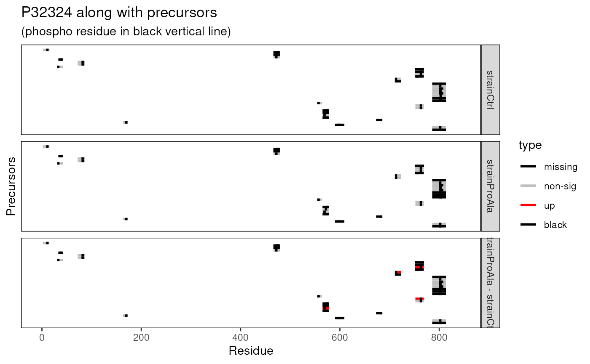